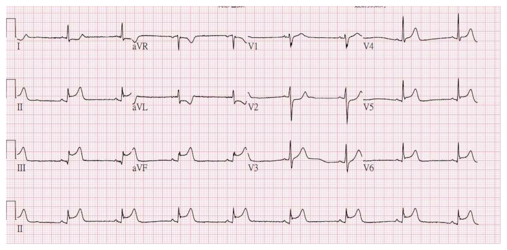
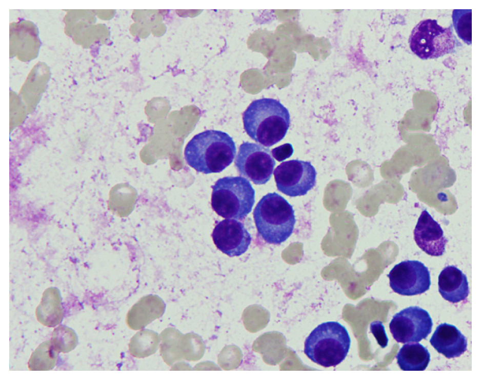
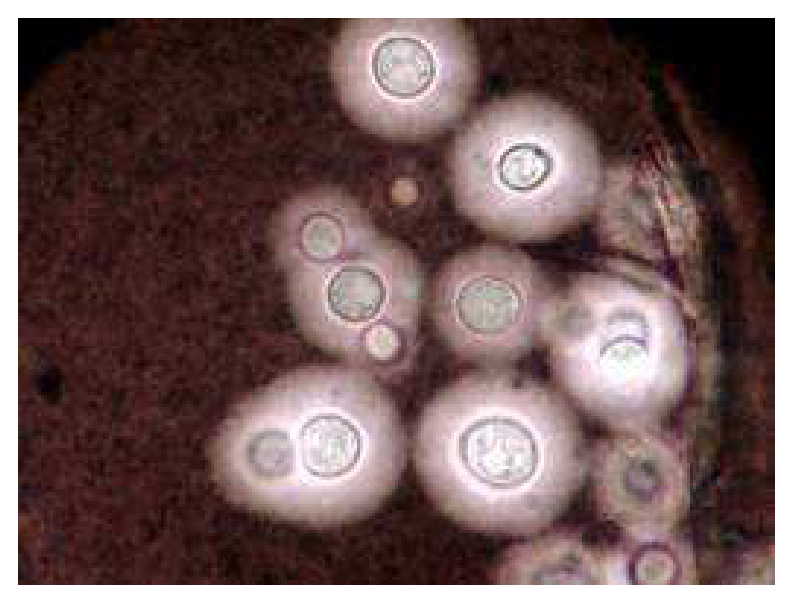
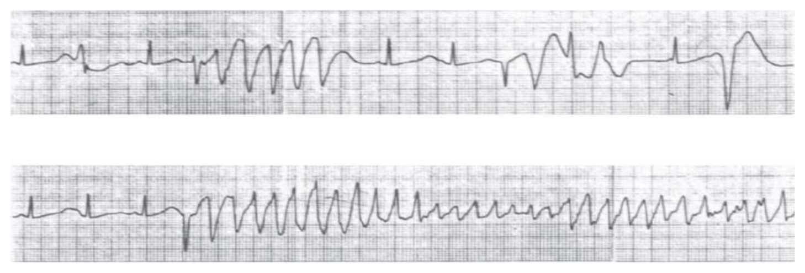
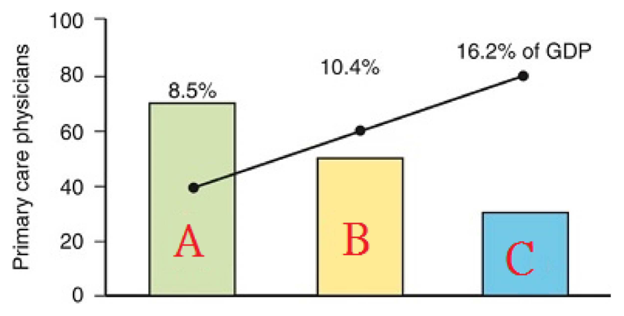
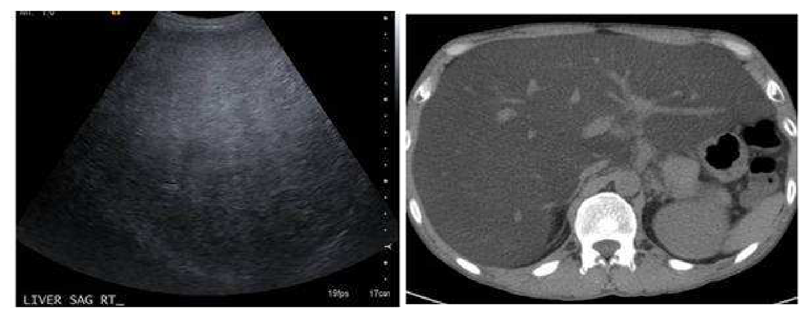
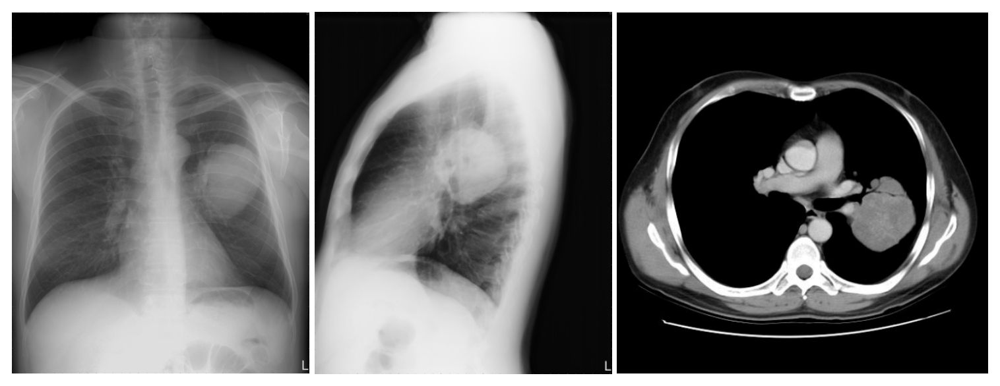

開卷有益 ／
醫師 ／ 醫學（三）（包括內科、家庭醫學科等科目及其相關臨床實例與醫學倫理） ／ 109 年第 1 次109 年第 1 次醫師醫學（三）（包括內科、家庭醫學科等科目及其相關臨床實例與醫學倫理）試題與答案
這一頁是民國 109 年第 1 次醫師醫學（三）（包括內科、家庭醫學科等科目及其相關臨床實例與醫學倫理）的整份歷屆試題，共 80 題，題目與標準答案出自考選部「國家考試試題及測驗式試題答案」開放資料，其中 80 題附有詳解。以下逐題列出題幹、選項與答案；要計時作答或記錄成績，請用線上練習。
考選部原始場次代碼：109020
線上作答這一科 →
全部 80 題
第 1 題
有關懷孕期間內科疾病的處理，下列敘述何者最為適當？
（A） 子癲前症（preeclampsia）之特色是高血壓與蛋白尿，此類患者在懷孕過程中絕對禁用阿斯匹靈（aspirin），以避免生產時出血（B） 孕婦於懷孕中、後期出現高血壓，為了減少蛋白尿的發生，在腎功能與鉀離子都正常時，應以選擇性的血管張力素受體阻斷劑（angiotensin receptor blocker），作為第一線高血壓治療用藥（C） 瓣膜性心臟病患在懷孕過程中，心因性死亡的可能性以二尖瓣狹窄（mitral stenosis）患者為最高（D） 妊娠糖尿病發生時，為了減少妊娠併發症，應積極以藥物控制孕婦血糖，其中，以DPP-IV抑制劑（dipeptidyl peptidase Ⅳ inhibitor）最被建議為第一線藥物答案：（C）
詳解與考點 正解：懷孕合併內科疾病中何者最適當。妊娠時血容量增加與心輸出量上升，二尖瓣狹窄（mitral stenosis）會限制跨瓣血流增加，容易肺鬱血與心衰竭，依傳統風濕性瓣膜病考點，二尖瓣狹窄最易失代償且是重要心因性死亡原因，故選 C；實際比較仍受嚴重度與瓣膜類型影響。
A：低劑量 aspirin 可在特定高風險孕婦用於子癲前症預防，不能說子癲前症患者於整個孕期絕對禁用；「絕對禁用」是過度化敘述。
B：angiotensin receptor blocker, ARB 有胎兒腎臟與羊水相關風險，懷孕期間不作為第一線降壓藥，即使腎功能及血鉀正常也不能改變此原則。
D：妊娠糖尿病先重視飲食、運動與血糖監測；需要藥物時，DPP-IV inhibitor 並非孕期第一線治療，故不適當。
本題考點：妊娠心臟病（heart disease in pregnancy）中 mitral stenosis 對妊娠生理變化耐受差；孕期高血壓避免 ACE inhibitor 與 ARB；妊娠糖尿病（gestational diabetes mellitus）以生活型態介入與適當血糖控制為基礎。
第 2 題
下列有關譫妄（delirium）的敘述，何者最適當？
（A） 老年人住院時譫妄的發生率，平均約為1.0～5.0 %（B） 失智症（dementia）是譫妄最主要的前置因子（predisposing factor）（C） 鴉片類藥物（opioids）或是抗膽鹼劑（anti-cholinergics）的使用，可有效幫助患者減少譫妄的發生（D） 身體約束（physical restraint）及benzodiazepines注射，目前被建議用於譫妄的治療答案：（B）
詳解與考點 正解：譫妄的易感因子（predisposing factor）。失智症（dementia）代表既有腦部脆弱性，是老年人發生譫妄最重要的前置因子之一，故選 B。
A：住院老年人的譫妄發生率遠高於 1.0～5.0% 的敘述，尤其急性病房與高風險族群更常見，故此數字不適當。
C：opioids 與 anticholinergics 都可能誘發或惡化譫妄，並非有效預防方式；它們看似能處理疼痛或症狀，卻是老年人用藥審視的重要風險因子。
D：身體約束與 benzodiazepines 可能加重混亂、跌倒或不良結果，通常不建議常規用於譫妄治療；應優先找出病因並採非藥物處置。
本題考點：譫妄（delirium）為急性、波動性的注意力與認知障礙；失智症（dementia）是重要 predisposing factor，藥物審視與非藥物支持是預防及治療的核心。
第 3 題
下列口服降血糖藥，何種最可能引起維生素B12缺乏？
（A） biguanides（B） acarbose（C） thiazolidinediones（D） sulfonylureas答案：（A）
詳解與考點 正解：口服降血糖藥與維生素B12缺乏的關聯。biguanides 主要指 metformin，長期使用可降低維生素B12吸收，因而增加缺乏風險；臨床若出現貧血或周邊神經症狀，應想到此不良反應，故選 A。
B：acarbose 是 α-glucosidase inhibitor，延緩腸道醣類分解與吸收；常見問題是腹脹、排氣或腹瀉，並非典型的維生素B12缺乏。
C：thiazolidinediones 是 insulin sensitizer，主要不良反應與體重增加、水腫及心衰竭風險相關，沒有典型造成維生素B12缺乏的機轉。
D：sulfonylureas 刺激胰島素分泌，較重要的不良反應是低血糖與體重增加；看似同為長期口服降糖藥，卻沒有 metformin 的B12吸收問題。
本題考點：雙胍類（biguanides）與維生素B12缺乏（vitamin B12 deficiency）——metformin 長期治療可影響B12吸收；口服降血糖藥（oral antidiabetic drugs）的不良反應須依藥物類別辨識。
第 4 題
低血鈉的鑑別診斷，下列那一項最不適當？
（A） 甲狀腺功能低下可能造成等容積型低血鈉症（euvolemic hyponatremia）（B） 低容積（hypovolemia）會使血液中的加壓素（vasopressin）增加（C） 心衰竭造成的高容積型低血鈉症（hypervolemic hyponatremia）其尿液中的鈉濃度通常大於 20 mM（D） 燒傷可能造成尿液中鈉濃度低於 20 mM的低容積型低血鈉答案：（C）
詳解與考點 正解：心衰竭的高容積型低血鈉症與尿鈉。心衰竭雖有總體液量增加，但有效動脈循環容積不足，腎臟會啟動鈉水滯留；在未使用利尿劑等例外情況下，尿鈉通常偏低，而非通常大於 20 mM，故最不適當的是 C。
A：甲狀腺功能低下可因水排除能力下降而造成等容積型低血鈉症，屬合理的鑑別診斷。
B：低容積會透過壓力感受器刺激加壓素（vasopressin）分泌，使腎臟保留水分，這是低容積型低血鈉症的核心機轉。
D：燒傷造成體液流失時可形成低容積狀態，腎臟傾向保留鈉，尿鈉可偏低，與此敘述相符。
本題考點：低血鈉症（hyponatremia）依體液容積分為低容積、等容積與高容積型；有效動脈循環容積（effective arterial blood volume）下降會增加 vasopressin 並促進腎臟保鈉。
第 5 題
以一群健康的80歲老人與一群健康的20歲年輕人相比，下列何者在老人組最不會下降？
（A） 運動時可達到的最快心跳速率（B） 動脈血氧分壓（C） 腎絲球過濾率（glomerular filtration rate）（D） 血中胰島素（insulin）濃度答案：（D）
詳解與考點 正解：健康老化時「最不會下降」的生理量。老年人周邊組織對胰島素的敏感性常下降，為維持血糖，基礎或餐後胰島素濃度不一定下降，甚至可較高；因此血中胰島素是四項中最不會下降者，故選 D。
A：最大心跳速率隨年齡下降，運動時可達到的最快心跳速率因而較年輕人低。
B：肺部彈性與氣體交換效率隨年齡改變，健康老年人的動脈血氧分壓通常較年輕人低。
C：腎單位與腎血流隨老化減少，腎絲球過濾率（glomerular filtration rate）通常下降。
本題考點：正常老化（normal aging）會降低最大心跳速率、動脈血氧分壓與腎絲球過濾率；胰島素阻抗（insulin resistance）可使胰島素濃度不隨年齡下降。
第 6 題
下列有關主動脈瓣狹窄之敘述，何者錯誤？
（A） 二瓣性主動脈瓣（bicuspid aortic valve）是一種最常見的先天性瓣膜異常，易導致主動瓣狹窄（B） 因造成左心室血流輸出阻礙，疾病早期，左心室會擴大以代償輸出量之不足，但此時病人無明顯症狀（C） 當病程進展到開始出現臨床心臟衰竭症狀時，若無妥善治療，平均病人存活時間僅剩2年以下（D） 因器材技術進步，經導管主動脈置換術（TAVR），在外科開刀風險較高的病人族群的治療結果已與傳統瓣膜置換手術相近答案：（B）
詳解與考點 正解：主動脈瓣狹窄早期左心室的代償方式。固定的流出道阻力造成壓力負荷，左心室先以向心性肥厚（concentric hypertrophy）降低壁張力，而不是以腔室擴大作為早期代償；故 B 的敘述錯誤。
A：二瓣性主動脈瓣是常見的先天性瓣膜異常，會加速瓣膜鈣化與狹窄，敘述正確。
C：嚴重主動脈瓣狹窄一旦出現心衰竭症狀，未治療的預後很差，敘述符合此病的自然病史。
D：經導管主動脈瓣置換術（transcatheter aortic valve replacement, TAVR）已是高外科風險病人的重要治療選擇，治療結果可與手術置換相近。
本題考點：主動脈瓣狹窄（aortic stenosis）造成左心室壓力負荷與向心性肥厚；症狀性重度狹窄的預後不佳，瓣膜置換是關鍵治療。
第 7 題
下列何種狀況或藥物，最不可能出現心電圖QT延長的現象？
（A） 蜘蛛網膜下出血（subarachnoid hemorrhage）（B） 低血鈣症（hypocalcemia）（C） 甲狀腺亢進（hyperthyroidism）（D） amiodarone答案：（C）
詳解與考點 正解：最不可能造成 QT 延長的情況。甲狀腺亢進較常引起竇性心搏過速與心房性心律不整，並非 QT 延長的典型原因，故選 C。
A：蜘蛛網膜下出血可因中樞神經傷害與自主神經失衡出現心電圖變化，包括 QT 延長。
B：低血鈣症會延長心室動作電位的平台期，因而使 QT 間期延長。
D：amiodarone 為抗心律不整藥，可延長復極與 QT 間期；它看似用來治療心律不整，卻仍具有 QT 延長的藥理效應。
本題考點：QT 間期（QT interval）反映心室去極化至復極化的總時間；低血鈣症（hypocalcemia）、中樞神經傷害與部分抗心律不整藥均可造成 QT 延長。
第 8 題
一位40歲男性因疲倦及喘至門診求診。生命體徵血壓125/80 mmHg，心跳每分鐘85下且規律。室內空氣脈搏血氧飽和度(room air SpO2）98%。身體診察有右心室頂起（right ventricle heave），並於左側第二肋間可觸及收縮期顫抖（systolic thrill），且左側第二肋間可聽到收縮期心雜音。除此之外，也可聽到明顯且隨呼吸變化分裂第二心音（wide split second heart sound）。最可能之診斷為何？
（A） 心房中隔缺損（atrial septal defect）（B） 主動脈狹窄（aortic stenosis）（C） 開放性動脈導管（patent ductus arteriosus）（D） 肺動脈瓣狹窄（pulmonary stenosis）答案：（D）
詳解與考點 正解：左上胸骨緣的收縮期顫抖與雜音、右心室頂起，以及隨呼吸變化的寬分裂第二心音。這組合指出右心室流出道阻塞：肺動脈瓣狹窄使右心室壓力上升，產生右心室肥厚與射出性收縮期雜音；肺動脈瓣關閉延遲使 P2 延後，形成寬分裂 S2，故選 D。
A：心房中隔缺損也可有固定性分裂 S2 與肺血流增加的收縮期雜音，但本題強調分裂隨呼吸變化，且有明顯收縮期顫抖，較支持肺動脈瓣狹窄。
B：主動脈狹窄的射出性雜音最常在右上胸骨緣聽到，並可傳至頸部，與本題左側第二肋間的定位不符。
C：開放性動脈導管典型是連續性雜音，不是單純的射出性收縮期雜音與寬分裂 S2。
本題考點：肺動脈瓣狹窄（pulmonary stenosis）——右心室流出道阻塞造成左上胸骨緣射出性收縮期雜音、右心室肥厚及延遲的 P2；第二心音分裂（split S2）可協助鑑別病灶。
第 9 題
一位55歲男性因胸悶與低血壓至急診求診。大約半小時前，病患在睡夢中突然因胸悶不適而驚醒。除此之外，病患也有頭暈無力與嘔吐數次。生命徵象顯示血壓78/40 mmHg，心跳每分鐘50次，呼吸每分鐘20次。肺部聽診無濕囉音（rales）。心電圖如下圖所示。胸部X光圖無縱隔腔擴大，無肺水腫情形。心臟超音波顯示左心室收縮功能正常，但右心室擴大。以下何者為最佳立即處置？

（A） 立即置放主動脈氣球幫浦（intra-aortic balloon pump）（B） 立即給與強心劑dobutamine（C） 立即給與硝化甘油靜脈注射（D） 立即給與快速輸液治療normal saline 500 mL答案：（D）
詳解與考點 正解：心電圖在 II、III、aVF 可見 ST 段上升，符合下壁 ST 上升型心肌梗塞；合併 V1 的 ST 段上升、右心室擴大、低血壓、心搏過緩且肺部無濕囉音，支持右心室梗塞（right ventricular infarction）。右心室梗塞時左心室充填仰賴足夠前負荷，立即給予 normal saline 500 mL 快速輸液可增加右心室輸出與左心室前負荷、改善低血壓，故選 D。
A：主動脈氣球幫浦（intra-aortic balloon pump）主要用於特定心因性休克情境的循環支持；本例左心室收縮功能正常，血流動力不穩主要來自右心室前負荷不足，優先處置是補充容量。
B：dobutamine 可增加心肌收縮力，但也可能使心跳加快並增加心肌耗氧；右心室梗塞的初始處置應先以輸液改善前負荷，若補液後仍持續低灌流才考慮升壓或正性肌力藥物。
C：硝化甘油會擴張靜脈、降低前負荷；本例右心室梗塞已依賴前負荷維持心輸出量，使用（C）可能使血壓進一步下降，是看似可用於心肌缺血卻在此情境不適當的誘答。
本題考點：右心室梗塞（right ventricular infarction）常伴隨下壁心肌梗塞，呈低血壓、肺部清晰與右心室擴大；前負荷（preload）依賴的右心室衰竭應先審慎快速補液，避免硝酸鹽等降低前負荷的藥物。
第 10 題
一位52歲在魚市場送貨的張先生，之前每週一到週六清晨5時載貨到某魚市場工作時，能扛10公斤為一箱的海鮮穿梭於市場約10來趟，勝任愉快。上週日參加喜宴，多喝了一些酒，第二天在同一魚市場進行相同工作時發覺走了5趟就覺得喘，需要休息10分鐘才能再搬貨。他原以為前一晚沒睡好，只要回家休息就可恢復，沒想到接下來3天皆是如此，因此前來醫院就醫。醫師的初步診斷為心衰竭。請問根據紐約心臟協會的功能分類（NYHA functional classification），應屬於：
（A） 第一級（B） 第二級（C） 第三級（D） 第四級答案：（B）
詳解與考點 正解：平時可完成重體力搬運工作，現僅在同樣活動量下出現喘與必須休息，但休息時沒有症狀。NYHA II 是日常休息舒適、輕度活動受限；病人原本的一般日常活動量已會引發呼吸困難，屬輕度活動受限的第二級，故選 B。
A：NYHA I 是所有日常身體活動均不造成症狀，與本題相同工作已出現喘不符。
C：NYHA III 是低於日常程度的輕微活動即明顯受限；本題仍能完成部分較重的搬運工作，限制未達此程度。
D：NYHA IV 是休息時也有心衰竭症狀，任何活動都會加重不適，本題沒有休息時症狀。
本題考點：紐約心臟協會功能分類（NYHA functional classification）以活動時症狀分級；第二級（class II）是休息舒適但一般日常活動會出現症狀。
第 11 題
有關與血脂異常相關的黃色脂肪瘤（xanthoma）之敘述，下列何者錯誤？
（A） 只有血液中低密度脂蛋白膽固醇（LDL cholesterol）過高時才會發生，與血液中甘油三脂（triglyceride）的濃度無關（B） 常分布在皮下（subcutaneous）處（C） 常分布在肌腱鞘（tendon sheath）處（D） 常分布在身體四肢的伸肌表面（extensor surface）答案：（A）
詳解與考點 正解：黃色脂肪瘤不只與 LDL 膽固醇有關。不同脂蛋白異常都可形成 xanthoma，嚴重高三酸甘油脂血症可出現 eruptive xanthoma；因此說只在 LDL 過高時發生、與三酸甘油脂無關是錯誤的，故選 A。
B：黃色脂肪瘤可分布於皮下組織，敘述正確。
C：肌腱與肌腱鞘的黃色脂肪瘤是特定脂質異常的重要表現，敘述正確。
D：四肢伸側是常見分布位置之一，敘述正確。
本題考點：黃色脂肪瘤（xanthoma）是脂質沉積的皮膚或肌腱表現；高 LDL 膽固醇（LDL cholesterol）與高三酸甘油脂血症（hypertriglyceridemia）皆可相關。
第 12 題
有關心包膜疾病的敘述，下列何者錯誤？
（A） 心包膜本身是一個雙層袋子，包括有visceral pericardium以及parietal pericardium兩層，之間由15～50毫升的心包膜液來分開（B） 在急性心包膜發炎時，病患可能會出現有較為低頻（low-pitch）的friction rub的心音，在病患前傾，在呼氣末期時較容易聽到，隨著心包膜水量漸漸增加，有時會有心包膜填塞（cardiac tamponade）的表現，此時friction rub聲音反而會消失（C） 在心電圖的表現上，早期較常看見廣泛性的ST節上升（D） 在cardiac tamponade時有一個Beck’s triad：低血壓，心音聲音消失，頸靜脈怒張有明顯的X descent以及消失的Y descent答案：（B）
詳解與考點 正解：急性心包膜炎摩擦音的音質。心包膜摩擦音（pericardial friction rub）通常是高頻、粗糙或刮擦樣的聲音，而不是低頻；B 因此錯誤。心包積液增多時摩擦音可因兩層心包膜不再相互摩擦而變弱或消失，正是此選項看似合理卻不能掩蓋前段音質錯誤之處。
A：心包膜由臟層（visceral pericardium）與壁層（parietal pericardium）組成，中間有少量心包液，敘述正確。
C：急性心包膜炎早期常見廣泛性 ST 節上升，是典型心電圖表現。
D：心包膜填塞的 Beck’s triad 為低血壓、頸靜脈怒張與心音低弱；頸靜脈波可見 X descent 保留而 Y descent 減弱，敘述正確。
本題考點：急性心包膜炎（acute pericarditis）可見高頻摩擦音與廣泛性 ST 節上升；心包膜填塞（cardiac tamponade）造成心搏量下降與頸靜脈壓上升。
第 13 題
關於C型肝炎的自然病史，下列何者錯誤？
（A） 慢性C型肝炎經過20～30年後，約有20～25%的帶原者會發展成肝硬化（B） 肝硬化患者每年有1～4%罹患肝細胞癌（C） 慢性C型肝炎是西方國家肝臟移植最主要的適應症之一（D） 女性、酗酒、以及30歲以上的感染是慢性C型肝炎快速進展之重要因素答案：（D）
詳解與考點 正解：慢性 C 型肝炎快速進展的危險因子。男性、高齡感染、持續大量飲酒與共病等會增加纖維化進展；D 把女性列為重要快速進展因素，方向相反，故選 D。
A：慢性 C 型肝炎約經 20～30 年後，約有 20～25% 可進展為肝硬化，是傳統估計範圍，並會隨族群及共病而變動。
B：C 型肝炎相關肝硬化病人的肝細胞癌年發生率常估為約 1～4%，題載範圍符合傳統估計；實際風險受族群影響。
C：慢性 C 型肝炎曾是西方國家肝臟移植的重要適應症之一，敘述符合其疾病負擔。
本題考點：C 型肝炎自然病史（natural history of hepatitis C）——慢性感染可進展為肝硬化與肝細胞癌；肝纖維化進展（fibrosis progression）與男性、高齡及飲酒較相關。
第 14 題
下列那一位病人的膽囊結石需治療，而且以使用口服膽鹽溶石劑（ursodeoxycholic acid, UDCA）來治療較合適？
（A） 28歲婦女，有單顆1.0公分大小的膽結石在膽囊內；未曾有過症狀（B） 72歲男人，已有數次右上腹疼痛，合併噁心嘔吐，胸部X光顯示右上腹膽囊部位有鈣化點；超音波顯示有3個膽結石，各為0.5公分大小（C） 60歲婦女，右上腹疼痛已12小時，併有噁心嘔吐，體溫38°C，超音波顯示有3顆膽結石，直徑為1～2公分，膽囊壁厚，而膽囊周圍有液體滯留（D） 70歲婦女，已有數次劇烈上腹痛，每次持續1～2小時，常於大餐之後發生，於2個月前才發作1次急性心肌梗塞。腹部X光看不到異常處，超音波顯示有1顆直徑大小0.4公分的膽結石答案：（D）
詳解與考點 正解：有症狀、結石小且影像未見鈣化，並且近期心肌梗塞使手術風險較高。口服 ursodeoxycholic acid 適用於選定的膽囊內小型、非鈣化膽固醇結石，特別是不能或暫不宜接受手術者；D 的反覆膽絞痛與近期心肌梗塞最符合此情境，故選 D。
A：無症狀膽囊結石通常不需治療，不能因結石存在便優先用溶石劑。
B：反覆症狀表示需要處理，但腹部影像出現鈣化點提示鈣化結石，口服膽鹽溶石效果不佳；看似結石小，卻因鈣化而不適合此法。
C：持續右上腹痛、發燒、膽囊壁增厚與周圍液體支持急性膽囊炎，應處理急性發炎與評估膽囊切除，不是以口服溶石劑作為急性期治療。
本題考點：膽囊結石（cholelithiasis）的治療取決於症狀、併發症與手術風險；ursodeoxycholic acid 適用於特定非鈣化膽固醇結石，並非急性膽囊炎治療。
第 15 題
以下關於痙攣（spasm）of the sphincter of Oddi的敘述何者錯誤？
（A） 偶而會有AST，ALT或alkaline phosphatase升高現象（B） 常有右上腹或上腹疼痛，類似膽結石之症狀（C） sphincter of the Oddi manometry有助於診斷（D） 對於疼痛嚴重的病人，morphine是最適當的止痛劑答案：（D）
詳解與考點 正解：Oddi 括約肌痙攣時的止痛藥選擇。morphine 可增加 Oddi 括約肌張力或使其痙攣惡化，因此不宜被稱為最適當的止痛劑，D 錯誤。
A：Oddi 括約肌功能異常可出現間歇性肝膽酵素上升，敘述合理。
B：右上腹或上腹部膽絞痛樣疼痛是常見表現，容易與膽結石症狀混淆，敘述正確。
C：Oddi 括約肌壓力測定（sphincter of Oddi manometry）可協助診斷，雖有侵入性與風險，仍是功能評估方法。
本題考點：Oddi 括約肌功能異常（sphincter of Oddi dysfunction）可造成膽絞痛樣腹痛與肝膽酵素波動；鴉片類藥物（opioids）對括約肌張力的影響是用藥辨析重點。
第 16 題
有關B型肝炎病毒的基因型敘述，下列何者錯誤？
（A） 至少已有8個亞型（subtypes）及10種基因型（A–J）（B） 基本上感染後的臨床病程嚴重度與病毒亞型有關（C） 基因型B相較於基因型C、D，有較低的肝硬化及肝癌的風險（D） 基因型A不管有無接受抗病毒藥物治療，相對其他基因型，有較高機會產生表面抗原（HBsAg）消失或是e抗原（HBeAg）消失答案：（B）
詳解與考點 正解：HBV 基因型與臨床病程的關係。病毒基因型（genotype）與亞型（subtype）是不同層次的分類；臨床病程、肝硬化與肝癌風險主要與基因型及宿主、病毒量等因素相關，不能概括說嚴重度與病毒亞型有關，故 B 錯誤。
A：HBV 可分為至少 8 個亞型及 A 至 J 共 10 種基因型，符合本題採用的分類。
C：基因型 B 相較基因型 C 與 D，傳統資料顯示肝硬化與肝細胞癌風險較低。
D：基因型 A 的 HBsAg 或 HBeAg 消失機會與其他基因型不同，反映基因型會影響血清學反應，敘述正確。
本題考點：B 型肝炎病毒基因型（HBV genotype）與亞型（subtype）不可混為一談；HBV 自然病史（natural history）受基因型、宿主因素與病毒複製狀態共同影響。
第 17 題
有關急性B型肝炎的敘述，下列何者錯誤？
（A） nucleoside analogue或nucleotide analogue治療可以用於重症患者（B） nucleoside analogue或nucleotide analogue治療可以縮短疾病病程（C） 若需使用nucleoside analogue或nucleotide analogue治療，建議使用到HBsAg seroconversion後3個月，或是HBeAg seroconversion後6個月（D） 約99%病患不會成為慢性帶原本題送分，無標準答案
詳解與考點 本題官方公告送分。
第 18 題
關於肝硬化所導致的食道靜脈曲張（esophageal varices），以下敘述何者正確？
（A） 非選擇性的beta 阻斷劑（nonselective β-blockers），如propranolol或nadolol，可以降低第一次靜脈曲張出血的機率（B） 內視鏡靜脈曲張結紮（endoscopic variceal ligation），對於預防第一次靜脈曲張出血的效果並不好（C） 內視鏡靜脈曲張結紮，因可以降低肝門靜脈壓力，所以可以用來治療靜脈曲張出血（D） 靜脈曲張出血的病人，最好能輸血將血紅素維持在10 g/dL以上答案：（A）
詳解與考點 正解：肝硬化食道靜脈曲張的初次出血預防。非選擇性 β 阻斷劑降低心輸出量並造成內臟血管收縮，可降低肝門靜脈流入與首次靜脈曲張出血風險，故 A 正確。
B：內視鏡靜脈曲張結紮（endoscopic variceal ligation）可用於高風險靜脈曲張的初次出血預防，不能說效果並不好。
C：靜脈曲張結紮是以機械方式阻斷曲張靜脈，並非藉由降低肝門靜脈壓力治療出血；看似能止血，卻不能把其局部作用誤稱為降壓機轉。
D：急性靜脈曲張出血採限制性輸血策略，以免過度輸血提高門脈壓與再出血風險，不以把血紅素維持在 10 g/dL 以上為目標。
本題考點：門脈高壓（portal hypertension）導致食道靜脈曲張（esophageal varices）；非選擇性 β 阻斷劑（nonselective β-blockers）與靜脈曲張結紮均可預防出血，但作用機轉不同。
第 19 題
下列關於大腸直腸癌治療之敘述，何者正確？
（A） 第二期或第三期的直腸癌，可以在術前施行CCRT（concurrent chemoradiotherapy）減少復發機會並促進治癒率（B） 肛門癌的危險因子與大腸直腸癌相類似（C） K-ras基因突變者，對於標靶藥物cetuximab會有比較好的反應（D） 儘管手術完整切除腫瘤，縫合處復發（anastomotic recurrences）為大腸直腸癌術後最常見的復發部位，因此大腸鏡是最重要的追蹤檢查答案：（A）
詳解與考點 正解：第二、三期直腸癌的局部復發控制。局部晚期直腸癌可在術前施行同步化學放射治療（concurrent chemoradiotherapy, CCRT），以縮小腫瘤、改善局部控制並降低復發風險，故 A 正確。
B：肛門癌與 HPV 感染、免疫抑制等關聯較強，危險因子不等同於大腸直腸癌。
C：K-ras 基因突變代表對 EGFR 抑制劑 cetuximab 的反應較差；看似是依基因選用標靶藥，但突變並非較佳反應的標記。
D：大腸直腸癌術後復發常見於肝臟、肺部或局部等處，不能概括說縫合處復發最常見；大腸鏡重要，但不是唯一或必然最重要的追蹤方式。
本題考點：直腸癌新輔助治療（neoadjuvant CCRT）用於局部控制；RAS 基因（RAS gene）狀態可預測抗 EGFR 標靶治療反應。
第 20 題
關於inflammatory bowel disease的藥物治療，下列何者正確？
（A） sulfasalazine可分解為sulfapyridine（anti-inflammatory effect）及5-aminosalicylic acid（ASA）（antibacterialeffect）之成分，為臨床相當常用的口服藥物（B） 在inflammatory bowel disease急性症狀控制之後，glucocorticoids的使用在疾病的maintenance therapy中為首選（C） anti-TNF therapy可結合血液中TNF-alpha，而降低腸道發炎性反應，為moderately to severely active ulcerativecolitis的重要治療；在慢性B型肝炎的患者，anti-TNF therapy並沒有產生reactivation of hepatitis B virus的風險（D） 在急性發作時，bowel rest加上total parenteral nutrition（TPN）也具有inducing remission of active Crohn'sdisease的效果，其效果甚至與glucocorticoids相當答案：（D）
詳解與考點 正解：Crohn’s disease 急性發作的誘導緩解選項。腸道休息合併 total parenteral nutrition（TPN）可改善營養與減少腸道刺激，較早期資料顯示其誘導緩解效果可與 glucocorticoids 相當，故選 D；這不表示 TPN 是現今常規誘導治療。
A：sulfasalazine 分解後，5-aminosalicylic acid 才是主要局部抗發炎成分；選項把 5-ASA 與 sulfapyridine 的作用顛倒。
B：glucocorticoids 適合誘導急性緩解，不適合作為長期維持治療，因長期毒性高。
C：anti-TNF therapy 可治療中重度潰瘍性結腸炎，但慢性 B 型肝炎病人有 HBV reactivation 風險，治療前須評估與預防，故整段敘述錯誤。
本題考點：發炎性腸道疾病（inflammatory bowel disease）區分誘導緩解（induction of remission）與維持治療（maintenance therapy）；anti-TNF therapy 可能造成 B 型肝炎再活化（HBV reactivation）。
第 21 題
關於Helicobacter pylori的藥物治療，下列何者正確？
（A） 若消化性潰瘍已經由proton pump inhibitor治療痊癒，其Helicobacter pylori就無需治療，因為不會影響潰瘍的復發率（B） 在早期胃癌的病患，病灶雖然已切除，Helicobacter pylori仍需治療，因為會降低metachronous胃癌的復發率（C） 除菌藥物包括amoxicillin、metronidazole、tetracycline、clarithromycin、bismuth compounds等，在抗生素除菌治療的期間，proton pump inhibitor是否給與並無影響抗生素的除菌效果（D） 除菌治療後慣例要在7天內執行urea breath test來確認除菌成功答案：（B）
詳解與考點 正解：早期胃癌切除後仍須根除 Helicobacter pylori。根除 H. pylori 可降低異時性胃癌（metachronous gastric cancer）發生風險，因此即使病灶已切除，B 的敘述正確。
A：H. pylori 持續存在會增加消化性潰瘍復發，潰瘍癒合後仍應接受根除治療，敘述錯誤。
C：proton pump inhibitor 可提高根除療法效果，不能說是否給予沒有影響。
D：根除療效確認須在停用會干擾檢驗的藥物並經適當間隔後進行，不能在治療後 7 天內就以尿素呼氣試驗判定成功。
本題考點：幽門螺旋桿菌根除（Helicobacter pylori eradication）可降低潰瘍復發與異時性胃癌風險；尿素呼氣試驗（urea breath test）應在適當治療後間隔進行確認。
第 22 題
40歲男性有高血壓、慢性腎病，有時精神倦怠，血中肌酸酐（creatinine）6.5 mg/dL、血色素11.6 g/dL、鐵素（ferritin）105 ng/mL、維生素B12 150 pg/mL、葉酸（folate）1.2 ng/mL。對此病人，使用下列何者治療最不適當？
（A） 紅血球生長素（B） 鐵劑（C） 維生素B12（D） 葉酸答案：（A）
詳解與考點 正解：慢性腎病病人的貧血治療是否已有適應症。此人血色素 11.6 g/dL，且鐵素 105 ng/mL；同時維生素B12與葉酸偏低。紅血球生長素主要用於慢性腎病且貧血達治療考量者，現階段血色素並未顯示需要以它治療，故 A 最不適當。
B：慢性腎病病人常須評估鐵狀態並補充鐵劑；雖須依轉鐵蛋白飽和度等完整鐵指標個別決定，但並非本題最不適當的選項。
C：維生素B12 150 pg/mL 偏低，補充維生素B12 可處理可逆的營養性缺乏。
D：葉酸 1.2 ng/mL 偏低，補充葉酸適當；只補葉酸前仍須同步處理 B12 缺乏，以免掩蓋其神經學問題。
本題考點：慢性腎病貧血（anemia of chronic kidney disease）需先排除可逆原因，如鐵、維生素B12與葉酸缺乏；紅血球生成刺激劑（erythropoiesis-stimulating agent）應依血色素與整體情境使用。
第 23 題
52歲女性，全身倦怠、食慾不振，血中肌酸酐（creatinine）11.2 mg/dL，決定接受腎臟替代療法，目前下列何種治療有最差之5年存活率？
（A） HLA相符腎臟移植（B） HLA不相符腎臟移植（C） ABO血型不相符腎臟移植（D） 血液透析答案：（D）
詳解與考點 正解：腎臟替代療法的長期存活比較。相較成功腎臟移植，血液透析的長期存活率通常較差，因此四種方式中最差者為 D。
A：HLA 相符腎臟移植的免疫相容性較佳，通常有較好的移植物與病人預後，非最差。
B：HLA 不相符腎臟移植雖增加免疫學挑戰，但在適當免疫抑制與追蹤下，整體長期結果通常仍優於長期透析。
C：ABO 血型不相符腎臟移植需進行特別的免疫處置，風險較高，但仍是可行的移植策略，不能因此視為存活最差。
本題考點：腎臟替代療法（renal replacement therapy）包括腎臟移植與透析；腎臟移植（kidney transplantation）在合適病人通常提供較佳的長期存活與生活品質。
第 24 題
45歲女性病人，接受腹膜透析，3天前腹痛，1天前透析液變混濁，今天至急診，透析液中的白血球356/μL，用抗生素治療3天後，透析液培養長出念珠菌（candidiasis）。下列何種處置最為適當？
（A） 使用口服抗黴菌藥物（B） 使用靜脈注射抗黴菌藥物（C） 使用腹腔灌注抗黴菌藥物（D） 拔除腹膜透析導管答案：（D）
詳解與考點 正解：腹膜透析液混濁且培養出念珠菌，這是腹膜透析相關黴菌性腹膜炎（fungal peritonitis）。黴菌可在腹膜透析導管形成持續感染的生物膜，單靠任何途徑的抗黴菌藥通常無法充分根除；處置核心是及早拔除導管，並給予全身性抗黴菌治療，故選 D。
A：口服抗黴菌藥可作為全身治療的一部分，但保留受感染導管會留下感染源，不能取代拔管。
B：靜脈抗黴菌藥同樣不能取代移除導管；它看似能快速提高血中濃度，卻無法處理導管上的生物膜與持續污染。
C：腹腔灌注抗黴菌藥可使腹腔局部有藥物，但黴菌性腹膜炎的關鍵處置仍是拔除導管，不宜以導管內給藥延誤感染源控制。
本題考點：腹膜透析相關腹膜炎（peritoneal dialysis-associated peritonitis）；黴菌性腹膜炎（fungal peritonitis）須重視感染源控制（source control），及早拔除腹膜透析導管。
第 25 題
下列有關postobstructive diuresis的敘述，何者錯誤？
（A） 發生在雙側或單側尿路完全阻塞，經過成功疏通的病人（B） 尿液為低張含大量鹽分，可能導致高血鈉（C） 致病機轉為排泄先前滯留體內的尿素，產生滲透壓利尿（osmotic diuresis）（D） 靜脈輸液治療不宜補充＞每日尿液流失量，以免發生醫源性體液容積增加答案：（A）
詳解與考點 正解：問疏通尿路後的利尿現象何者錯誤。阻塞後利尿（postobstructive diuresis）通常發生於雙側阻塞解除，或單側阻塞但另一側腎臟功能無法代償時；單純單側尿路完全阻塞而對側腎功能正常，通常不致造成顯著全身性利尿。因此（A）把一般單側完全阻塞一概列入，敘述過度延伸，故選 A。
B：阻塞解除後可排出大量低張、含鈉的尿液，若水分流失相對更多，確可造成高血鈉，敘述正確，故不是答案。
C：先前滯留的尿素排出會造成滲透壓利尿（osmotic diuresis），是阻塞解除後多尿的機轉之一，敘述正確。
D：輸液須依尿量、血壓與電解質密切調整，通常不宜機械式完全補足或超過尿液流失量，以免加劇持續利尿或容量負荷，敘述方向正確。
本題考點：阻塞後利尿（postobstructive diuresis）；滲透壓利尿（osmotic diuresis）；尿路阻塞解除後的體液與電解質監測。
第 26 題
一位28歲女性，這兩年來有頭暈及容易疲倦的症狀，且越來越嚴重而住院治療。入院前八個月，因症狀持續加重，於某醫學中心發現血色素9 g/dL，血球容積92.5 fL，白血球及血小板數目正常，當時肌酸酐為1.3mg/dL。住院後血壓140/90 mmHg，脈搏76/分鐘，心臟無雜音，下肢輕微水腫，實驗室檢查發現肌酸酐增至2.4 mg/dL，血色素8.5 g/dL，血清儲鐵蛋白（ferritin）591 ng/mL，鐵172 μg/dL，鐵結合總容量為190 μg/dL，大便潛血反應為陰性，尿液檢查無異常，下列何者為此病人腎功能惡化最可能之病變？
（A） rapidly progressive glomerulonephritis（B） thrombotic microaniopathy（C） chronic tubulointerstitial disorders（D） hypertensive nephrosclerosis答案：（C）
詳解與考點 正解：腎功能在數月內惡化、尿液檢查無異常，合併正球性貧血與鐵儲存充足，較像慢性腎實質功能下降而非腎絲球發炎。慢性腎小管間質疾病（chronic tubulointerstitial disorders）常以緩慢腎功能下降、相對平淡的尿沉渣及早期腎性貧血表現；血清 ferritin 591 ng/mL、鐵 172 μg/dL、總鐵結合能力 190 μg/dL 並不支持缺鐵或慢性失血，故選 C。
A：快速進行性腎絲球腎炎（rapidly progressive glomerulonephritis）通常在數週至數月快速惡化，且常見血尿、蛋白尿或活動性尿沉渣，與本題尿液無異常不符。
B：血栓性微血管病變（thrombotic microangiopathy）常伴血小板減少與微血管病性溶血性貧血；本題白血球、血小板正常，鐵指標亦非溶血的典型線索。
D：高血壓腎硬化（hypertensive nephrosclerosis）需有長期或較明顯的高血壓病史支持；本題僅為住院時 140/90 mmHg，且臨床線索更偏向小管間質性病變。
本題考點：慢性腎小管間質疾病（chronic tubulointerstitial disorders）；腎性貧血（anemia of chronic kidney disease）；尿沉渣可協助區分腎絲球與腎小管間質病變。
第 27 題
有關慢性腎臟病的治療，下列何者正確？
（A） 若患者合併高血壓，其降血壓藥物首選為乙型阻斷劑（β-blocker）（B） 若患者合併退化關節炎，可使用非類固醇類抗發炎藥物（NSAID）來止痛（C） 患有重度蛋白尿之糖尿病慢性腎臟病患，最好合併使用血管張力素轉化酶抑制劑（ACEi）和血管張力素II型受體拮抗劑（ARB）來治療（D） 患有蛋白尿之第4期慢性腎臟病患者，應採用低蛋白飲食療法答案：（D）
詳解與考點 正解：第4期慢性腎臟病合併蛋白尿，治療除控制血壓與腎保護藥物外，亦須避免過高蛋白負荷。經營養評估後採取低蛋白飲食，可減少腎絲球高過濾與代謝廢物負荷，並須避免營養不良，故（D）正確。
A：慢性腎臟病合併高血壓時，尤其有蛋白尿者，常優先考慮具腎保護效果的 ACEi 或 ARB；β-blocker 並非一概首選。
B：NSAID 會抑制腎臟前列腺素、降低腎血流，可能惡化腎功能並造成鈉水滯留；它看似可止痛，卻不是慢性腎臟病患者可任意使用的止痛藥。
C：ACEi 與 ARB 皆可減少蛋白尿，但常規併用會增加高血鉀與急性腎損傷風險，並非「最好」的治療。
本題考點：慢性腎臟病（chronic kidney disease）的營養治療；蛋白尿（proteinuria）與腎保護；腎素－血管張力素系統抑制劑（renin-angiotensin system inhibitors）的風險。
第 28 題
有關慢性腎臟病-礦物質骨病變（chronic kidney disease-mineral bone disorder）的鈣磷異常，下列敘述何者錯誤？
（A） 腎絲球過濾率下降會使尿磷排出減少，進而促進副甲狀腺素（PTH）和纖維母細胞生長因子23（fibroblastgrowth factor 23, FGF-23）生成（B） 纖維母細胞生長因子23（FGF-23）增加，會抑制活性維他命D3生成，促進低血鈣（C） 纖維母細胞生長因子23（FGF-23）會刺激副甲狀腺素生成（D） 血清纖維母細胞生長因子23（FGF-23）值過高，與慢性腎臟病病患的死亡率有正相關答案：（C）
詳解與考點 正解：慢性腎臟病礦物質骨病變中 FGF-23 與副甲狀腺素的關係。腎功能下降造成磷滯留，FGF-23 上升以促進排磷並抑制活性維他命 D；但 FGF-23 對副甲狀腺的作用不是單純刺激 PTH 生成。繼發性副甲狀腺機能亢進主要與低鈣、活性維他命 D 減少及磷負荷相關，因此（C）錯誤，故選 C。
A：腎絲球過濾率下降使磷排泄受限，早期可引發 FGF-23 上升，並在鈣磷與維他命 D 變化下促進 PTH 反應，敘述正確。
B：FGF-23 抑制腎臟活性維他命 D 生成，降低腸道鈣吸收，因而有助於低血鈣與繼發性副甲狀腺機能亢進，敘述正確。
D：在慢性腎臟病中，較高的 FGF-23 濃度與不良預後及較高死亡風險相關，敘述正確，故不是答案。
本題考點：慢性腎臟病－礦物質骨病變（chronic kidney disease-mineral bone disorder）；纖維母細胞生長因子23（fibroblast growth factor 23, FGF-23）；繼發性副甲狀腺機能亢進（secondary hyperparathyroidism）。
第 29 題
關於退化性關節炎（osteoarthritis）的敘述，下列何者錯誤？
（A） 是一種常見的關節炎，好發於年紀較大的病人（B） 好發的關節包括手部的distal interphalangeal（DIP）joints、hip joints及knee joints（C） 關節的X ray檢查常會發現narrowed joint space，但通常不會有bone erosion的情形（D） 因為關節有發炎，因此病人血中的CRP和ESR值常會有上升的情形答案：（D）
詳解與考點 正解：退化性關節炎屬以軟骨退化為主的非全身性發炎疾病。雖可有局部滑膜發炎與疼痛，但 CRP、ESR 通常正常，並不常出現明顯全身性發炎指數上升；（D）把它當成全身性發炎關節炎，故錯誤，選 D。
A：退化性關節炎是常見疾病，盛行率隨年齡增加而上升，敘述正確。
B：手部 DIP、髖關節及膝關節都是退化性關節炎常見侵犯部位，敘述正確。
C：X 光常見關節間隙變窄、骨刺與骨下硬化；典型退化性關節炎通常不造成侵蝕性骨破壞，敘述正確。
本題考點：退化性關節炎（osteoarthritis）；關節間隙變窄（joint space narrowing）；發炎性關節炎與退化性關節炎的發炎指數鑑別。
第 30 題
針對乾燥症（Sjögren's syndrome）合併腺體外表現（extraglandular manifestations）的治療，下列何者正確？
（A） 若併發關節炎通常使用抗腫瘤壞死因子（anti-TNF）治療（B） 若併發血管炎可使用類固醇與免疫抑制劑治療（C） 若併發淋巴癌使用高劑量類固醇治療即可（D） 若併發雷諾氏症要使用非類固醇類消炎止痛藥治療答案：（B）
詳解與考點 正解：乾燥症的腺體外表現中「血管炎」代表較嚴重的全身性免疫媒介器官侵犯。依病情嚴重度可使用類固醇合併免疫抑制劑控制發炎與器官損傷，故（B）正確。
A：乾燥症合併關節炎常先依症狀與疾病活動度使用較適當的抗發炎或疾病調節治療；anti-TNF 並非通常的標準首選。
C：乾燥症相關淋巴癌應依淋巴癌的病理分類與分期接受血液腫瘤治療，高劑量類固醇單獨使用不足以作為根治治療。
D：雷諾氏症的重點是避免誘發因子與使用血管擴張策略；NSAID 可止痛，卻不能改善血管痙攣的主要機轉。
本題考點：乾燥症（Sjögren's syndrome）的腺體外表現（extraglandular manifestations）；血管炎（vasculitis）；免疫抑制治療（immunosuppressive therapy）。
第 31 題
有關僵直性脊椎炎（ankylosing spondylitis），下列敘述何者正確？
（A） HLA-B27陰性就不是僵直性脊椎炎（B） 結膜炎是僵直性脊椎炎常見的眼睛表現（C） 僵直性脊椎炎病人大多數是HLA-B27陽性（D） 僵直性脊椎炎病人女性比較多答案：（C）
詳解與考點 正解：僵直性脊椎炎與 HLA-B27 的流行病學關聯。HLA-B27 與僵直性脊椎炎高度相關，多數患者為陽性，但它不是診斷的必要條件；因此（C）正確，故選 C。
A：HLA-B27 陰性仍可罹患僵直性脊椎炎，診斷須整合發炎性背痛、影像與其他脊椎關節炎特徵，不能以單一基因標記排除。
B：典型且常見的急性眼部表現是前葡萄膜炎（anterior uveitis），不是結膜炎；結膜炎較常與反應性關節炎連結，這是容易混淆的誘答。
D：僵直性脊椎炎在男性較常見且病程常較典型，並非女性比較多。
本題考點：僵直性脊椎炎（ankylosing spondylitis）；人類白血球抗原B27（HLA-B27）；前葡萄膜炎（anterior uveitis）。
第 32 題
王太太某日在果園工作時被一隻蜜蜂叮咬，約10幾分鐘後，出現全身蕁麻疹（urticaria），接著呼吸困難，家人連忙將她送到急診室求診。抵達急診室時血壓為88/54 mmHg，心跳110 BPM。對王太太目前的狀況，應以下列何項優先給藥？
（A） methylprednisolone 60 mg靜脈注射（B） diphenhydramine 50～100 mg靜脈注射（C） albuterol 5 mg吸入（D） epinephrine 0.5 mg肌肉注射答案：（D）
詳解與考點 正解：蜂螫後數分鐘出現全身蕁麻疹、呼吸困難、低血壓與心搏過速，符合過敏性休克（anaphylaxis）。首要藥物是 epinephrine 0.5 mg 肌肉注射，可同時改善血管擴張與滲漏、支氣管收縮及上呼吸道水腫，故選 D。
A：methylprednisolone 起效較慢，不能在當下迅速逆轉低血壓或氣道阻塞，僅可作為後續輔助處置。
B：diphenhydramine 可改善蕁麻疹等皮膚症狀，卻無法可靠處理休克與呼吸道水腫；它看似對過敏有效，但不能取代 epinephrine。
C：albuterol 可輔助改善持續支氣管痙攣，作用侷限於呼吸道，不能處理全身性血管滲漏與低血壓。
本題考點：過敏性休克（anaphylaxis）；腎上腺素（epinephrine）肌肉注射；過敏反應的氣道、呼吸與循環優先處置。
第 33 題
60歲何女士有高血壓10年，每日服用losartan 50 mg與hydrochlorothiazide 12.5 mg，血壓一直控制在理想範圍。2個月前因為肺結核開始服用四合一抗結核藥物，一週前何女士開始出現發燒及手部多發性小關節腫痛現象，抽血檢驗發現抗核抗體（ANA）1：1280陽性，anti-histone antibody陽性，但anti-dsDNA antibodies為陰性。下列處置何者最為適當？
（A） 停掉losartan（B） 停掉isoniazid（C） 停掉hydrochlorothiazide（D） 原有用藥都不停，加上prednisolone 0.5 mg/kg/day答案：（B）
詳解與考點 正解：開始抗結核藥後出現發燒、多關節炎、ANA 高滴度與 anti-histone antibody 陽性，而 anti-dsDNA 陰性，典型指向藥物誘發狼瘡（drug-induced lupus）。isoniazid 是可造成此症候群的藥物，處置先停用可疑藥物，故選 B。
A：losartan 並非本題臨床情境最具代表性的致病藥物，且症狀在加入抗結核藥後才出現，停掉它無法針對最可能病因。
C：hydrochlorothiazide 可與某些藥物性自體免疫表現相關，但依時間關係與 anti-histone antibody 線索，isoniazid 更可疑。
D：若不先移除致病藥物而僅加 prednisolone，會持續暴露於病因；多數藥物誘發狼瘡以停藥為首要處置，嚴重症狀才視情況加用抗發炎治療。
本題考點：藥物誘發狼瘡（drug-induced lupus）；anti-histone antibody；isoniazid 相關自體免疫反應。
第 34 題
以下有關hereditary nonpolyposis colon cancer（HNPCC；或稱Lynch's syndrome）常見的臨床病理及基因分子變異，何者錯誤？
（A） HNPCC大腸直腸癌患者診斷的中位年齡，較其他一般民眾大腸直腸癌診斷的中位年齡來得較年長（B） HNPCC患者的家屬也好發卵巢癌、子宮內膜癌或其他的腸胃道癌症（C） HNPCC與germline mutations of hMSH2或hMLH1相關（D） hMSH2或hMLH1之基因變異將導致細胞內DNA mismatch repair機制的缺損答案：（A）
詳解與考點 正解：Lynch syndrome/HNPCC 的大腸直腸癌發病年齡。此遺傳性腫瘤症候群患者相較散發性大腸直腸癌，通常在較年輕年齡診斷；（A）卻說中位診斷年齡較年長，故為錯誤敘述，選 A。
B：Lynch syndrome 家族成員除大腸直腸癌外，子宮內膜癌、卵巢癌及其他腸胃道相關癌症風險亦提高，敘述正確。
C：hMSH2、hMLH1 的胚系突變是 Lynch syndrome 常見的遺傳異常，敘述正確。
D：hMSH2 或 hMLH1 異常會損害 DNA 錯配修復功能，造成微衛星不穩定性並提高致癌風險，敘述正確。
本題考點：Lynch syndrome／遺傳性非息肉性大腸直腸癌（hereditary nonpolyposis colorectal cancer, HNPCC）；DNA 錯配修復（DNA mismatch repair）；微衛星不穩定性（microsatellite instability）。
第 35 題
下列關於頭頸癌的敘述何者錯誤？
（A） 在西方國家，人類乳突病毒（human papilloma virus）與口咽部（oropharynx）頭頸癌的發生率增加有關（B） 人類乳突病毒相關的頭頸癌與人類乳突病毒不相關的頭頸癌比較，預後較差（C） 早期頭頸癌治療後，有可能在頭頸其他部位、肺部、食道出現第二原發（second primary）癌症（D） 晚期頭頸癌有效的藥物治療，包括化學治療、標靶治療答案：（B）
詳解與考點 正解：HPV 相關口咽癌與非 HPV 相關頭頸癌的預後比較。HPV 相關口咽鱗狀細胞癌通常對治療反應較佳、整體預後較好；（B）說預後較差，故錯誤，選 B。
A：在西方國家，HPV 感染與口咽部頭頸癌發生增加有關，敘述正確。
C：頭頸癌患者可因共同致癌暴露與區域癌化（field cancerization），在頭頸部、肺或食道出現第二原發癌，敘述正確。
D：晚期頭頸癌的全身性治療可包含化學治療與標靶治療，實際選擇視腫瘤位置、病理與病人狀況而定，敘述正確。
本題考點：人類乳突病毒相關頭頸癌（human papillomavirus-associated head and neck cancer）；口咽癌（oropharyngeal cancer）；區域癌化（field cancerization）。
第 36 題
下列腫瘤指數與其適用腫瘤種類的配對，何者錯誤？
（A） 攝護腺癌：prostate specific antigen（PSA）（B） 攝護腺癌：lactate dehydrogenase（LDH）（C） 睪丸癌：alpha-fetoprotein（AFP）（D） 睪丸癌：human chorionic gonadotropin（hCG）答案：（B）
詳解與考點 正解：腫瘤標記須配對其具有臨床追蹤或診斷價值的腫瘤。PSA 是攝護腺相關標記；AFP 與 hCG 是睪丸生殖細胞腫瘤常用標記。LDH 雖可反映腫瘤負荷與細胞周轉，並非攝護腺癌的特異或常規腫瘤標記，因此（B）配對錯誤，故選 B。
A：PSA 與攝護腺癌的篩檢、診斷評估與治療後追蹤相關，敘述正確。
C：AFP 可由部分非精原細胞性睪丸生殖細胞腫瘤產生，是重要血清腫瘤標記，敘述正確。
D：hCG 可在睪丸生殖細胞腫瘤升高，與 AFP 共同用於評估與追蹤，敘述正確。
本題考點：腫瘤標記（tumor markers）；攝護腺特異抗原（prostate-specific antigen, PSA）；睪丸生殖細胞腫瘤（testicular germ cell tumor）的 AFP 與 hCG。
第 37 題
一位75歲女性，平常健康狀況良好，但是近三個月感到食慾不振，疲乏無力，下背疼痛。理學檢查呈現臉色與結膜蒼白，無肝脾腫大。實驗室數據顯示：白血球5,310/μL，分類無異常。血紅素7.8 g/dL，血小板171,000/μL。肝功能正常，serum creatinine是3.4 mg/dL。腰部脊椎之影像檢查呈現嚴重塌陷。其骨髓抹片顯示如下圖。以下關於這位病人最可能的疾病之診斷與治療，何者錯誤？

（A） 此疾病好發於老人（B） 診斷之後，立即給與高劑量的靜脈輸注化學治療是目前標準的治療方法（C） 即使血液中測量不到monoclonal protein，也不能排除此病（D） lenalidomide、steroid與bortezomib是治療此病的有效處方答案：（B）
詳解與考點 正解：此病人有貧血、腎功能不全、下背痛合併脊椎塌陷等多發性骨髓瘤（multiple myeloma）典型表現；骨髓抹片可見成群漿細胞，細胞具偏心圓形深染細胞核與豐富嗜鹼性細胞質，支持漿細胞腫瘤。多發性骨髓瘤的治療須依是否適合自體造血幹細胞移植、共病症及疾病表現個別規劃；確診後立即以高劑量靜脈化學治療並非所有病人的現行標準作法，故錯誤的是 B。
A：多發性骨髓瘤主要發生於高齡成人，年齡是重要危險因子；本例75歲與此流行病學特徵相符，故此敘述正確，非本題答案。
C：多發性骨髓瘤可有不分泌型或寡分泌型，血清蛋白電泳未測得 monoclonal protein 不能單獨排除診斷；仍須整合血清游離輕鏈、尿液檢測、骨髓檢查及骨病灶等資料判斷，故此敘述正確。
D：lenalidomide 為免疫調節藥物（immunomodulatory drug），bortezomib 為蛋白酶體抑制劑（proteasome inhibitor），合併類固醇可作為多發性骨髓瘤的有效治療組合，故此敘述正確。
本題考點：多發性骨髓瘤（multiple myeloma）的 CRAB 器官損害，包括高血鈣、腎損傷、貧血與骨病灶；骨髓漿細胞（plasma cell）形態；多發性骨髓瘤須依移植適合度選擇含免疫調節藥物、蛋白酶體抑制劑及類固醇的治療策略。
第 38 題
一位30歲女性，過去健康狀況良好，並無重大疾病。她在3個月前剖腹產下一個健康男嬰。懷孕及生產過程也很順利。但生產後，她卻發現即使沒有碰撞，也常有皮膚大片瘀青，有時甚至會有皮下血腫。病人否認有任何藥物的服用或是毒物的曝露。血液數據顯示，白血球9,600/μL，血紅素10.7 g/dL，血小板210,000/μL，白血球分類無異常。PT 10.3 sec（INR 0.95），aPTT 98 sec，以normal plasma做mixing test無法完全矯正延長的aPTT。factor VIIIc的活性小於1%，而factor VIII antibody是28.41 BU/mL（參考值＜0.6）。以下關於這位病人最可能的疾病之診斷與治療，何者錯誤？
（A） 此類病人常常有hemarthrosis（B） 除了懷孕生產之外，此病亦可能與惡性腫瘤與自體免疫疾病有關連性，但是約有一半的病人找不到明顯的原因（C） 嚴重出血危及生命時，可以輸注PCC（prothrombin complex concentrate）或是recombinant factor VIIa來止血（D） 治療有反應者，在停藥之後，還是可能有高達約20%的病人在半年內復發答案：（A）
詳解與考點 正解：產後新發瘀青與皮下血腫、單獨 aPTT 明顯延長且 mixing test 無法矯正、factor VIII 活性小於 1% 並有高滴度 factor VIII antibody，符合後天性血友病A（acquired hemophilia A）。此病以皮膚、軟組織與黏膜出血為典型，關節腔出血反而不像先天性血友病A常見，故（A）錯誤，選 A。
B：後天性血友病A可與懷孕、惡性腫瘤或自體免疫疾病相關，亦有不少病例找不到明確病因，敘述正確。
C：嚴重或危及生命的出血須使用能繞過 factor VIII 抑制物的止血策略，例如 recombinant activated factor VII（rFVIIa）或活化凝血酶原複合濃縮劑（aPCC/APCC）；題目的 PCC 應理解為 activated PCC，未活化 PCC 不能與 aPCC 等同。
D：即使對免疫抑制治療有反應並停藥，仍可能復發，故後續需以臨床出血與 factor VIII/抑制物追蹤，敘述正確。
本題考點：後天性血友病A（acquired hemophilia A）；factor VIII 抑制物（factor VIII inhibitor）；混合試驗（mixing test）無法矯正的凝血因子抑制現象。
第 39 題
79歲女性，自訴以往健康良好，沒有服用任何藥物或營養品，某天早上起床時發現全身四肢有多處瘀青。隔日就診，身體檢查發現口腔裡有多處潰瘍和血塊。血球檢查數據如下（括弧內是正常參考數值）：RBC 5.02M/μL（3.78～4.99），Hb 11.1 g/dL（10.8～14.9），Hct 34.6 %（35.6～45.4），MCV 68.9 fL（80～100），PLT 5 K/μL（150～361），WBC 10.14 K/μL（3.54～9.06），白血球分類：Seg 58.1%，Eos. 1.0%，Baso.0.4%，Mono. 4.1%，Lym. 36.4%。以下何項敘述錯誤？
（A） 病人應考慮接受骨髓檢查協助診斷（B） 病人有可能是假性的血小板低下症，需要用含肝素（heparin）的採血管採集病人的血液之後，再做一次檢查（C） 病人應該立即輸注血小板濃縮液（D） 病人應避免劇烈活動答案：（B）
詳解與考點 正解：血小板僅 5 K/μL 且有瘀青、口腔黏膜出血，必須先確認是否為真性嚴重血小板低下。若懷疑 EDTA 相關假性血小板低下，應先以周邊血抹片確認凝集，並常用枸櫞酸鈉管複驗；（B）說必須使用 heparin 管過度絕對，且仍可能有抗凝劑相關凝集，故選 B。此處採血管與輸血時機的用語在不同實驗室與臨床情境可能有差異，故把握度為 low。
A：高齡新發、嚴重且原因未明的血小板低下，可考慮骨髓檢查以排除骨髓疾病，敘述正確。
C：血小板 5 K/μL 合併口腔黏膜出血屬高度出血風險，應緊急評估與處置；血小板濃縮液是否立即輸注仍須依出血嚴重度與病因判斷，但不是本題錯誤敘述的重點。
D：嚴重血小板低下時應避免劇烈活動與外傷，以降低出血風險，敘述正確。
本題考點：假性血小板低下（pseudothrombocytopenia）；嚴重血小板低下（severe thrombocytopenia）；黏膜出血（mucosal bleeding）的風險評估。
第 40 題
24歲女性，於員工健檢的血球檢查數據如下（括弧內是正常參考數值）：RBC 4.08 M/μL（3.78～4.99），Hb12.0 g/dL（10.8～14.9），Hct 37.2%（35.6～45.4），MCV 91.2 fL（80～100），MCH 29.4 pg（26～34），MCHC 32.3 g/dL（31～37），PLT 606 k/μL（150～361），WBC 171.25 k/μL（3.54～9.06），血球分類：Blast 0.5%，Promye l. 5.8%，Myelo. 14.8%，Meta 17.0%，Band 12.0%，Seg 37.9%，Eos. 1.0%，Baso. 3.5%，Mono. 4.0%，Lym. 3.5%。為了確立診斷，下列那一項檢查較不需要？
（A） 骨髓細胞染色體分析（B） 周邊血BCR/ABL1基因定性檢定（C） 白血球LAP score（D） 周邊血球免疫分型檢查（immunophenotyping）答案：（D）
詳解與考點 正解：白血球 171.25 K/μL、血小板增多，且周邊血可見由 promyelocyte、myelocyte、metamyelocyte 至成熟嗜中性球的粒細胞左移，並有 basophilia，最符合慢性骨髓性白血病（chronic myeloid leukemia, CML）。確立 CML 時，骨髓染色體與 BCR::ABL1 檢測直接確認 Philadelphia chromosome／融合基因；免疫分型主要用於急性白血病或淋巴性疾病，較不需要，故選 D。
A：骨髓細胞染色體分析可偵測 Philadelphia chromosome，亦有助於分期與評估額外染色體異常，敘述正確。
B：周邊血 BCR::ABL1 基因檢測可直接支持 CML 診斷，並作為後續分子追蹤基礎，敘述正確。
C：白血球 LAP score 可協助傳統上區分 CML 與類白血病反應，雖已多被分子檢測取代，仍比免疫分型更貼近本題的鑑別問題。
本題考點：慢性骨髓性白血病（chronic myeloid leukemia, CML）；BCR::ABL1 融合基因；Philadelphia chromosome。
第 41 題
以下那個遺傳基因變異導致卵巢癌發生的風險最高？
（A） BRCA1（B） BRCA2（C） MSH2（D） CHK2答案：（A）
詳解與考點 正解：比較各遺傳變異對卵巢癌的風險高低。BRCA1 胚系致病變異會顯著增加乳癌與卵巢癌風險，且在列出的選項中其卵巢癌風險通常高於 BRCA2，故選 A。
B：BRCA2 亦會提高卵巢癌風險，但相較 BRCA1 通常較低，因此不是本題最高者。
C：MSH2 與 Lynch syndrome 有關，也會增加卵巢癌風險，但在此比較中不是最高風險的基因。
D：CHK2 與乳癌易感性有關，但其卵巢癌風險關聯遠不如 BRCA1，故非答案。
本題考點：遺傳性乳癌卵巢癌症候群（hereditary breast and ovarian cancer syndrome）；BRCA1；胚系致病變異（germline pathogenic variant）。
第 42 題
以下何者不是子宮內膜癌（endometrial carcinoma）的危險因子？
（A） 肥胖（B） 使用tamoxifen治療乳癌（C） 單獨使用estrogen來治療停經後症候群（D） 使用progestin治療不孕症答案：（D）
詳解與考點 正解：子宮內膜癌多與未受黃體素平衡的雌激素刺激相關。progestin 會使子宮內膜分泌性轉化並拮抗雌激素造成的增生，治療不孕症時使用 progestin 並非子宮內膜癌危險因子，故選 D。
A：肥胖增加周邊脂肪組織的雌激素生成，形成相對未受拮抗的雌激素暴露，會提高子宮內膜癌風險。
B：tamoxifen 在乳房具有抗雌激素作用，但在子宮內膜有部分雌激素致效作用，因此會增加子宮內膜病變與癌症風險。
C：停經後單獨使用 estrogen 缺乏 progestin 保護，會持續刺激子宮內膜增生，是重要危險因子。
本題考點：子宮內膜癌（endometrial carcinoma）；未受拮抗的雌激素（unopposed estrogen）；黃體素（progestin）的子宮內膜保護作用。
第 43 題
有關慢性阻塞性肺病（chronic obstructive pulmonary disease）之敘述，下列何者錯誤？
（A） 主要造成因素包括抽菸、空氣污染或基因缺陷所導致（B） 發炎細胞主要為嗜中性白血球（neutrophils）及巨噬細胞（macrophages），並無T lymphocytes或eosinophils參與（C） 臨床症狀及肺功能表現與慢性氣喘有時不易區分（D） 臨床治療以支氣管擴張劑為主，部分特定病患也可以使用吸入型類固醇答案：（B）
詳解與考點 正解：COPD 氣道與肺實質發炎的細胞組成。COPD 常見嗜中性白血球與巨噬細胞，但也有 CD8+ T lymphocytes 參與；部分表型亦可有 eosinophils，因此（B）說完全沒有 T lymphocytes 或 eosinophils 參與是錯誤的絕對化敘述，故選 B。
A：抽菸、空氣污染暴露及遺傳因素都可導致 COPD，敘述正確。
C：COPD 與慢性氣喘可能有症狀與肺功能重疊，須依病史、可逆性與臨床特徵鑑別，敘述正確。
D：支氣管擴張劑是 COPD 症狀治療基石，部分具特定臨床特徵或反覆惡化的患者可使用吸入型類固醇，敘述正確。
本題考點：慢性阻塞性肺病（chronic obstructive pulmonary disease, COPD）；氣道發炎（airway inflammation）；嗜中性白血球（neutrophils）、巨噬細胞（macrophages）與 T lymphocytes。
第 44 題
下列何者為成人常見的前縱膈腔腫瘤？
（A） 食道腫瘤（esophageal tumor）（B） 神經性腫瘤（neurogenic tumor）（C） 胸腺瘤（thymoma）（D） 支氣管囊腫（bronchogenic cyst）答案：（C）
詳解與考點 正解：「成人常見」且位於前縱膈腔。前縱膈腔常見腫瘤可用 thymoma、teratoma、thyroid lesion、lymphoma 的分類記憶，其中胸腺瘤是成人典型前縱膈腔腫瘤，故選 C。
A：食道位於後縱膈腔相關區域，食道腫瘤不是典型前縱膈腔腫瘤。
B：神經性腫瘤多起源於交感神經鏈等後縱膈構造，位置與前縱膈腔不符。
D：支氣管囊腫多見於中縱膈腔或肺門附近，並非成人前縱膈腔常見腫瘤。
本題考點：縱膈腔腫瘤（mediastinal tumors）；前縱膈腔（anterior mediastinum）；胸腺瘤（thymoma）。
第 45 題
關於間皮瘤（mesothelioma）的敘述，下列何者正確？
（A） peritoneal mesothelioma比pleural mesothelioma較常見（B） pleural fluid或ascites之cytology，通常就足以診斷（C） 預後良好，中位數存活期（median overall survival）為3年（D） 少部分的間皮瘤（mesothelioma）為良性答案：（D）
詳解與考點 正解：間皮瘤的腫瘤性質與診斷特徵。間皮瘤多為惡性，但確有少部分為良性局限性腫瘤，因此（D）正確，故選 D。惡性胸膜間皮瘤常與石綿暴露相關，且確診通常需要取得足夠組織評估。
A：胸膜間皮瘤（pleural mesothelioma）遠比腹膜間皮瘤常見；腹膜型僅占較小部分，故此敘述把常見部位顛倒。
B：胸水或腹水的細胞學檢查可提供線索，但間皮瘤常難僅憑細胞形態與其他腺癌區分，通常仍須組織切片及免疫染色確認。它看似合理是因為惡性腫瘤可在積液中找到細胞，然而不足以通常作為確診依據。
C：惡性間皮瘤預後不佳，中位存活期通常不是 3 年；治療反應與疾病分期均會影響存活，但不能據此稱預後良好。
本題考點：間皮瘤（mesothelioma）多發於胸膜且多為惡性；惡性腫瘤診斷（malignancy diagnosis）須重視組織病理與免疫組織化學，積液細胞學通常不足以單獨確診。
第 46 題
要診斷肺尖（lung apices）上的病灶，下列何種X光片的照法，最為適當？
（A） PA view（B） lateral view（C） lateral decubitus view（D） lordotic view答案：（D）
詳解與考點 正解：肺尖病灶容易被鎖骨與上肋骨遮蔽。lordotic view 使鎖骨投影上移、較不覆蓋肺尖，最利於觀察肺尖部，故選 D。
A：PA view 是常規胸部 X 光正面攝影，可作為初步檢查，但肺尖仍可能被骨性結構遮蔽，並非針對肺尖病灶最適切的投照法。
B：lateral view 有助定位前後方向的病灶，卻不能像 lordotic view 一樣特別移開鎖骨投影；它看似能提供第二視角，但不是本題肺尖病灶的最佳專用投照。
C：lateral decubitus view 主要用於判斷胸水是否可自由流動，或協助偵測少量胸水，目的不是凸顯肺尖。
本題考點：胸部 X 光特殊投照（chest radiographic special views）；肺尖前彎位（apical lordotic view）可減少鎖骨與第一肋骨對肺尖的重疊。
第 47 題
70歲男性抽菸近50年，有多年長期咳嗽及運動時呼吸困難症狀，近日咳嗽及呼吸困難加劇前往急診處就醫。身體診查發現病人意識清楚，血壓穩定，但呼吸快速及胸部聽診有呼氣喘鳴聲（wheezes）。胸部X光片沒有肺炎之現象，痰液不多，其呼吸空氣時動脈血液氣體分析顯示pH 7.274，pCO2 78 mmHg，pO2 40 mmHg，HCO3- 36 mEq/L，BE(ECF) +9 mEq/L。給予氧氣後，下列何種處理最為正確？
（A） 給予重碳酸鈉輸液來改善酸血症（B） 迅速給予氣管內插管及使用呼吸器以改善pCO2至40 mmHg（C） 給予茶鹼（aminophylline）靜脈注射治療（D） 先給予支氣管擴張劑吸入治療，並考慮使用非侵襲性呼吸器治療答案：（D）
詳解與考點 正解：長期吸菸、慢性咳嗽、喘鳴與 CO2 滯留提示 COPD 急性惡化。pH 7.274 表示酸血症，pCO2 78 mmHg 顯示嚴重呼吸性酸中毒；HCO3- 36 mEq/L 上升表示原有慢性代償，但目前仍有急性失代償。病人意識清楚且血壓穩定，給氧後應先吸入支氣管擴張劑，並考慮非侵襲性通氣以改善通氣與減少呼吸功，故選 D。
A：此為呼吸性酸中毒，首要問題是肺泡低通氣與 CO2 排除不足；重碳酸鈉不能矯正通氣失敗，反可能增加 CO2 負荷。
B：插管侵襲性高，通常保留給無法保護呼吸道、血流動力不穩或非侵襲性通氣失敗者；且不可為了使 pCO2 立刻回到 40 mmHg 而過度通氣，以免造成不當的酸鹼變化。
C：aminophylline 的療效與安全性不如吸入短效支氣管擴張劑，且有心律不整等不良反應風險，不是此時的優先處置。
本題考點：COPD 急性惡化（acute exacerbation of COPD）；急性合併慢性呼吸性酸中毒（acute-on-chronic respiratory acidosis）；非侵襲性通氣（noninvasive ventilation）適用於意識清楚、可合作的高碳酸血症呼吸衰竭病人。
第 48 題
下列何種菌株的藥物敏感性試驗結果，符合多重抗藥性結核病（multidrug-resistant tuberculosis）的定義？
（A） isoniazid及streptomycin抗藥，但rifampin及ethambutol敏感（B） isoniazid, ethambutol及streptomycin抗藥，但rifampin敏感（C） isoniazid及rifampin抗藥，但ethambutol及streptomycin敏感（D） rifampin, ethambutol及streptomycin抗藥，但isoniazid敏感答案：（C）
詳解與考點 正解：多重抗藥性結核病（multidrug-resistant tuberculosis, MDR-TB）的定義關鍵是同時對 isoniazid 與 rifampin 抗藥，兩者是最重要的第一線抗結核藥。因此（C）符合定義，故選 C。
A：只有 isoniazid 抗藥而 rifampin 仍敏感，不符合「同時對 isoniazid 與 rifampin 抗藥」的 MDR-TB 定義。
B：雖對多種藥物抗藥，但 rifampin 仍敏感，因此不符合 MDR-TB；它看似抗藥範圍很廣，然而判定核心不是抗藥藥物數目，而是是否包含這兩種關鍵藥物。
D：rifampin 抗藥但 isoniazid 敏感，也未同時具備兩項必要抗藥條件，故非 MDR-TB。
本題考點：多重抗藥性結核病（multidrug-resistant tuberculosis, MDR-TB）的定義為對 isoniazid 與 rifampin 同時抗藥；藥物敏感性試驗（drug susceptibility testing）用於區分不同抗藥型態。
第 49 題
關於呼吸器相關肺炎（ventilator-associated pneumonia），下列敘述何者最不適當？
（A） 住院後5到7天內發生的呼吸器相關肺炎，致病菌可能不是多重抗藥菌，而是如肺炎鏈球菌（Streptococcuspneumoniae）或嗜血桿菌（Haemophilus influenzae）等（B） 住院7天後發生的呼吸器相關肺炎，致病菌較可能為多重抗藥菌，如綠膿桿菌（Pseudomonas aeruginosa）或鮑氏不動桿菌（Acinetobacter baumannii）等（C） 氣管內管插管雖可避免大量的分泌物吸入，但無法避免微量吸入（microaspiration）（D） 為避免呼吸器相關肺炎，必須將病人頭部抬高至少60度，以避免產生吸入性肺炎答案：（D）
詳解與考點 正解：題目問最不適當的 VAP 預防作法。抬高床頭可減少吸入風險，但預防呼吸器相關肺炎（ventilator-associated pneumonia, VAP）一般採半坐臥，並非必須抬高至少 60 度；過度強調固定角度也可能不利病人照護，故（D）最不適當，選 D。
A：較早期發生的 VAP 較可能由肺炎鏈球菌或嗜血桿菌等非多重抗藥菌引起，敘述符合早發與晚發感染病原分布的基本概念。
B：住院日數增加與先前醫療暴露會提高多重抗藥菌定殖機會，晚發 VAP 較可能見綠膿桿菌或鮑氏不動桿菌，敘述適當。
C：氣管內管雖繞過上呼吸道防護並可協助抽吸分泌物，但聲門周圍分泌物仍可微量吸入下呼吸道；這正是 VAP 的重要機轉，敘述正確。
本題考點：呼吸器相關肺炎（ventilator-associated pneumonia, VAP）預防；微量吸入（microaspiration）是氣管內插管病人的重要致病機轉；半坐臥（semi-recumbent positioning）可降低吸入風險。
第 50 題
有關甲狀腺荷爾蒙對於人體代謝及發育的敘述，下列何者錯誤？
（A） 在幼年期缺少甲狀腺荷爾蒙，會造成智力不足、身材矮小且終身不可逆的呆小症（cretinism）（B） 甲狀腺荷爾蒙可以降低細胞對氧氣的消耗，並且降低脂肪和碳水醣類化合物的代謝平衡，以提供正常生長和發育的需求（C） 若甲狀腺荷爾蒙過度分泌，會造成身體消瘦、情緒緊張焦慮、心跳加速、雙手顫抖，有時甚至會造成心臟衰竭（D） 甲狀腺荷爾蒙是維持生命所不可或缺的，一旦缺乏會造成人體對寒冷的耐受性降低，體重異常增加、身體黏液性腫（myxedema）、神智和身體活動變得笨拙和遲鈍答案：（B）
詳解與考點 正解：甲狀腺荷爾蒙對基礎代謝的作用方向。甲狀腺荷爾蒙會增加細胞氧氣消耗與基礎代謝，並促進醣類與脂肪代謝；（B）卻寫成降低，故為錯誤敘述，選 B。
A：幼年期嚴重缺乏甲狀腺荷爾蒙會妨礙腦部與身體發育，若未及時治療可造成不可逆的神經認知障礙與生長遲滯，敘述正確。
C：甲狀腺機能亢進可造成體重下降、焦慮、心搏過速與顫抖，嚴重時可誘發心臟衰竭，敘述正確。
D：甲狀腺機能低下會降低產熱與代謝，出現怕冷、體重增加、黏液性水腫及精神動作遲緩，敘述正確。
本題考點：甲狀腺荷爾蒙（thyroid hormone）增加基礎代謝率（basal metabolic rate）與氧氣消耗；甲狀腺機能亢進（hyperthyroidism）與低下（hypothyroidism）的全身表現。
第 51 題
有關糖尿病慢性併發症的敘述，下列何者錯誤？
（A） 糖尿病慢性併發症的發生與糖尿病的罹病期及血糖控制有關（B） 病人最好能定期接受糖尿病慢性併發症的篩檢（C） 病人可能有腹瀉或便秘的現象（D） 糖尿病的腎臟病變在早期就會有肌酸酐上升的現象答案：（D）
詳解與考點 正解：糖尿病腎病變的早期偵測重點是尿白蛋白異常，而非先出現肌酸酐上升。血清肌酸酐常在腎絲球過濾率已明顯下降後才升高，因此（D）錯誤，故選 D。
A：慢性高血糖暴露時間愈久、血糖控制愈差，微血管與大血管併發症風險愈高，敘述正確。
B：定期篩檢視網膜、腎臟、神經與足部等慢性併發症，可在症狀出現前介入，敘述正確。
C：糖尿病自主神經病變可影響腸胃蠕動，造成腹瀉、便秘或其他腸胃症狀，敘述正確。
本題考點：糖尿病腎病變（diabetic kidney disease）早期常以尿白蛋白異常表現；腎絲球過濾率（glomerular filtration rate）下降後血清肌酸酐才可能上升；糖尿病自主神經病變（diabetic autonomic neuropathy）可造成腸胃症狀。
第 52 題
有關代謝症候群（metabolic syndrome）的敘述，下列何者錯誤？
（A） 與肥胖及年齡有關，胰島素阻抗為可能的病理成因（B） 病人可能會有血壓或血糖的升高（C） 有代謝症候群的人罹患心臟血管疾病的風險會上升（D） 診斷的條件包括高三酸甘油脂血症及低密度脂蛋白膽固醇升高答案：（D）
詳解與考點 正解：代謝症候群的血脂判準是三酸甘油脂升高與高密度脂蛋白膽固醇降低，並不以低密度脂蛋白膽固醇升高作為診斷條件。因此（D）錯誤，故選 D。
A：腹部肥胖與年齡均與代謝症候群相關，胰島素阻抗也是重要病理機轉，敘述正確。
B：血壓升高與血糖升高均是代謝症候群的組成異常，敘述正確。
C：代謝症候群聚集多項心血管危險因子，會提高動脈粥樣硬化性心血管疾病風險，敘述正確。
本題考點：代謝症候群（metabolic syndrome）包含腹部肥胖、血壓升高、血糖升高、高三酸甘油脂與低 HDL-C；胰島素阻抗（insulin resistance）是重要病理生理機轉。
第 53 題
關於減重手術（bariatric surgery），下列敘述何者錯誤？
（A） 對新陳代謝的好處，部分是因為改變了腸道荷爾蒙分泌濃度所致（B） 通常在限制型（restrictive）手術之外，再合併吸收不良型（malabsorptive）手術，可增加減重效果（C） 可用來改善重度肥胖之第二型糖尿病病人的血糖控制（D） 無法降低重度肥胖病人的死亡率答案：（D）
詳解與考點 正解：減重手術不僅能減重，也能改善代謝疾病與長期健康結果。對合適的重度肥胖病人，減重手術可降低死亡率，因此（D）稱「無法降低」為錯誤敘述，故選 D。
A：腸胃道重建後，腸道荷爾蒙與飽足訊號改變是改善血糖與代謝的重要機轉之一，敘述正確。
B：限制性手術若合併吸收不良成分，通常可加強減重效果，但也須考量營養缺乏風險；敘述的方向正確。
C：減重手術可明顯改善重度肥胖合併第二型糖尿病病人的血糖控制，部分病人甚至可達緩解，敘述正確。
本題考點：減重手術（bariatric surgery）兼具限制攝食（restrictive）與減少吸收（malabsorptive）機制；代謝手術（metabolic surgery）可改善第二型糖尿病與長期死亡風險。
第 54 題
下列何種降血糖藥物，最容易發生低血糖的副作用？
（A） dipeptidyl peptidase-4（DPP-4）抑制劑（B） sodium-glucose co-transporter 2（SGLT2）抑制劑（C） meglitinide（D） glucagon-like peptide 1（GLP-1）受體促進劑答案：（C）
詳解與考點 正解：最容易造成低血糖的是直接刺激胰島素分泌、且作用不完全依賴血糖濃度的藥物。meglitinide 促使胰島 β 細胞分泌胰島素，若進食不足或用藥與餐次不配合便可能低血糖，故選 C。
A：DPP-4 抑制劑增強腸泌素的葡萄糖依賴性作用，單獨使用時低血糖風險低。
B：SGLT2 抑制劑經由尿糖排泄降血糖，不直接刺激胰島素分泌，單獨使用通常不易低血糖。
D：GLP-1 受體促進劑的促胰島素作用具葡萄糖依賴性，單獨使用的低血糖風險亦低；它看似會增加胰島素分泌，但與 meglitinide 的非葡萄糖依賴性促泌作用不同。
本題考點：促胰島素分泌劑（insulin secretagogues）如 meglitinide 有低血糖風險；腸泌素路徑（incretin pathway）的 DPP-4 抑制劑與 GLP-1 受體促進劑多為葡萄糖依賴性作用。
第 55 題
下列何者是術前診斷甲狀腺瘤良惡性最準確的方式？
（A） 甲狀腺細針穿刺細胞學檢查（B） 甲狀腺超音波（C） 頸部電腦斷層（D） 頸部核磁共振答案：（A）
詳解與考點 正解：術前評估甲狀腺結節良惡性的關鍵，是直接取得細胞做細胞病理判讀。甲狀腺細針穿刺細胞學檢查（fine-needle aspiration cytology, FNAC）能提供最直接的惡性風險分類，是題列方式中最準確的術前工具，故選 A。
B：甲狀腺超音波可評估結節大小、實質與可疑影像特徵，也可引導穿刺，但不能單憑影像確定良惡性。它看似很精細，然而可疑影像只是在決定是否穿刺與風險分層，不能取代細胞學。
C：頸部電腦斷層主要用於評估較大的腫瘤、周圍侵犯或胸腔延伸等解剖範圍，並非一般結節良惡性的首選診斷方式。
D：頸部核磁共振可提供軟組織與局部侵犯資訊，但對一般甲狀腺結節的術前良惡性判別，不如細針穿刺細胞學直接。
本題考點：甲狀腺結節（thyroid nodule）評估；細針穿刺細胞學（fine-needle aspiration cytology, FNAC）是術前惡性風險判讀的核心；超音波（ultrasonography）用於影像風險分層與穿刺導引。
第 56 題
一位50歲男性患者，未服用任何藥物和保健食品，主訴體重上升，有月亮臉、水牛肩、中心型肥胖、皮膚薄、易瘀青，下列處置何者最不適當？
（A） 隨機測量血中ACTH和cortisol（B） 抽血測量上午8點與下午4點的ACTH和cortisol（C） 測量24小時尿液的cortisol量（D） 做 1 mg dexamethasone suppression test答案：（A）
詳解與考點 正解：月亮臉、水牛肩、中心型肥胖、皮膚薄與易瘀青高度提示庫欣症候群（Cushing syndrome）。初步篩檢應使用能反映皮質醇日夜節律、尿中游離皮質醇或抑制試驗的標準化檢查；隨機單次測 ACTH 與 cortisol 受日夜變化與壓力影響，不能作為適當的初步篩檢，故（A）最不適當，選 A。
B：上午 8 點與下午 4 點的 ACTH、cortisol 不是建議的標準初篩，不能據此排除或確診；（A）與（B）的鑑別度有限。
C：24 小時尿液 cortisol 可評估整日游離皮質醇排泄量，是庫欣症候群常用的篩檢方法之一。
D：1 mg dexamethasone suppression test 可檢視低劑量 dexamethasone 後 cortisol 是否受到抑制，是常用初步篩檢方式之一。
本題考點：庫欣症候群（Cushing syndrome）的臨床表現；皮質醇日夜節律（diurnal cortisol rhythm）；初步篩檢可用尿液游離皮質醇（urinary free cortisol）或低劑量 dexamethasone 抑制試驗。
第 57 題
下列那一項處置最不會增加住院病人醫療照護相關感染肺炎（healthcare-associated pneumonia）的風險？
（A） 儘量讓病人平躺以維持住院的舒適度（B） 給與麻醉藥物（narcotics）全天止痛（C） 為方便抽痰延長使用氣管內插管（endotracheal intubation）（D） 使用口服sucralfate藥物治療胃炎答案：（D）
詳解與考點 正解：住院相關肺炎的重要風險包括誤吸、鎮靜造成咳嗽反射下降，以及侵入性氣道裝置。sucralfate 不會像抑酸藥物般明顯提高胃液 pH，因此較不促進胃部細菌定殖與吸入相關肺炎，是最不會增加風險的處置，故選 D。
A：平躺增加胃內容物與口咽分泌物吸入機會，特別是意識或吞嚥功能不佳者，會增加肺炎風險。
B：narcotics 可抑制意識、咳嗽反射與呼吸，增加分泌物滯留及誤吸風險。
C：氣管內插管破壞自然氣道防禦並增加微量吸入機會，延長使用時間會提高感染風險。
本題考點：住院相關肺炎（healthcare-associated pneumonia）的危險因子；吸入（aspiration）與氣管內插管（endotracheal intubation）會增加感染風險；sucralfate 不以提高胃液 pH 為主要作用。
第 58 題
下列有關皰疹相關病毒的敘述，何者正確？
（A） 免疫正常的人發生過皮膚性帶狀皰疹（herpes zoster），大於10%會反覆發作（B） 未曾施打水痘（chickenpox）疫苗且未曾感染過水痘者，在接觸水痘病人後有小於40%會被感染（C） 感染性單核細胞增多症（infectious mononucleosis）的最常見症狀是發燒、喉嚨痛、淋巴結腫大（D） 在年輕人，感染性單核細胞增多症的潛伏期為5〜10天答案：（C）
詳解與考點 正解：感染性單核細胞增多症最典型的臨床三聯徵為發燒、咽喉炎與淋巴結腫大，因此（C）正確，故選 C。常見病因為 Epstein–Barr virus。
A：免疫正常者帶狀皰疹可復發，但復發比例不會通常高於 10%，故此敘述誇大。
B：未具水痘免疫力者暴露於水痘病人後具有很高感染風險，不是小於 40%；它看似保守，卻低估水痘在易感接觸者中的高度傳染性。
D：感染性單核細胞增多症的潛伏期通常遠長於 5～10 天，故不符。
本題考點：感染性單核細胞增多症（infectious mononucleosis）常見表現為發燒、咽喉痛與淋巴結腫大；Epstein–Barr virus 是常見病因；水痘帶狀皰疹病毒（varicella-zoster virus）對無免疫者具高度傳染性。
第 59 題
根據美國疾病管制署對人類免疫不全病毒（HIV）感染及相關機遇性感染與腫瘤的分類，下列何種惡性腫瘤不是後天免疫不全症候群相關疾病（AIDS-defining conditions）？
（A） Hodgkin's lymphoma（B） Kaposi's sarcoma（C） Burkitt's lymphoma（D） invasive cervical carcinoma答案：（A）
詳解與考點 正解：AIDS-defining conditions 的惡性腫瘤分類。Hodgkin's lymphoma 雖在 HIV 感染者較常見且病程可能較嚴重，但不屬於 AIDS-defining cancer；因此（A）正確為題目所問，故選 A。
B：Kaposi's sarcoma 是 AIDS-defining malignancy，與人類皰疹病毒第 8 型相關，故不是答案。
C：Burkitt's lymphoma 屬非何杰金氏淋巴瘤的一型，為 AIDS-defining malignancy，故不是答案。
D：invasive cervical carcinoma 是 AIDS-defining malignancy；它看似是局部婦科疾病，但侵襲性子宮頸癌在此分類中具有明確地位。
本題考點：AIDS 定義疾病（AIDS-defining conditions）；AIDS 定義惡性腫瘤（AIDS-defining malignancies）包括 Kaposi's sarcoma、部分非何杰金氏淋巴瘤與侵襲性子宮頸癌；Hodgkin's lymphoma 不屬於此定義。
第 60 題
人類免疫不全病毒（HIV）感染的孕婦服用合併抗反轉錄病毒治療，若偵測不到血漿HIV病毒量（＜20copies/mL），則生下嬰兒感染HIV機會大約多少？
（A） 25%（B） 15%（C） 7%（D） ＜1%答案：（D）
詳解與考點 正解：孕期合併抗反轉錄病毒治療後，母體血漿 HIV 病毒量持續偵測不到。有效抑制病毒量會大幅降低母子垂直傳播，嬰兒感染機會約可降至 ＜1%，故選 D。
A：25% 接近未接受有效預防措施時可見的較高垂直傳播風險，與題幹病毒量受抑制不符。
B：15% 同樣高估了有效合併抗反轉錄病毒治療與病毒抑制下的傳播風險。
C：7% 仍高於病毒量偵測不到時的典型風險；它看似已經很低，但本題條件正是能把風險進一步降至 ＜1% 的關鍵。
本題考點：母子垂直傳播（mother-to-child transmission）；合併抗反轉錄病毒治療（combination antiretroviral therapy）以病毒量抑制（viral suppression）降低周產期 HIV 傳播。
第 61 題
39歲男性過去身體健康良好，因一週來發燒和持續性的頭痛到院就醫。身體診察檢查發現體溫39.0℃，口腔上顎有白斑，頸部並沒有僵硬。血液檢查發現白血球數7020/μL。電腦斷層僅顯示腦部水腫。脊椎穿刺（lumbar puncture）發現壓力>600 mmH2O，生化檢查發現蛋白質94 mg/dL，顯微鏡檢如圖示。下列敘述何者最不適當？

（A） 應進行愛滋病毒感染檢驗（B） 最有可能的病原是Cryptococcus neoformans（C） 目前標準的治療藥物組合是amphotericin B＋flucytosine（D） 治療療程完成4週即可停止治療答案：（D）
詳解與考點 正解：最不適當的是 D。圖中可見圓形酵母菌外圍有明顯未染色的透明暈圈，符合莢膜（capsule）形成的 Cryptococcus neoformans；再合併極高腦脊髓液開放壓、頭痛、發燒及口腔白斑，為隱球菌腦膜炎的典型情境。此病在 HIV 感染者常見，治療須分誘導、鞏固與維持階段，不能在完成 4 週療程後便直接停止全部抗黴菌治療，故選 D。
A：應進行 HIV 感染檢驗。口腔白斑提示免疫功能低下，而隱球菌腦膜炎是晚期 HIV 感染的重要伺機性感染，因此檢驗 HIV 可釐清宿主免疫狀態並影響後續抗反轉錄病毒治療與預防策略，屬適當處置。
B：最有可能的病原是 Cryptococcus neoformans。圖示的酵母菌具有寬廣透明莢膜暈圈，是隱球菌的關鍵形態特徵；其多醣莢膜可在墨汁染色（India ink stain）背景下呈現透明暈圈，與本題臨床表現相符。
C：目前標準的治療藥物組合是 amphotericin B+flucytosine。對隱球菌腦膜炎而言，這是誘導治療常用的合併抗黴菌療法，可較有效降低真菌量；之後仍須接續 fluconazole 鞏固及維持治療，不能把誘導治療結束視為全程治療完成。
本題考點：隱球菌腦膜炎（cryptococcal meningitis）——高顱內壓、酵母菌莢膜透明暈圈與免疫低下宿主是重要線索；墨汁染色（India ink stain）可顯示 Cryptococcus 的多醣莢膜；抗黴菌治療採誘導、鞏固、維持的分期策略。
第 62 題
一位74歲男性有高血壓病史，因喘、下肢水腫住院，住院檢查發現左心室功能正常，也無心律不整，給予利尿劑與抗高血壓藥物治療，數日後卻出現反覆不省人事，無脈搏、無血壓，需電擊治療，心電圖監測紀錄如下所示，最可能合併何種電解質異常？

（A） 低血鈉症（hyponatremia）（B） 高血鉀症（hyperkalemia）（C） 高血鈣症（hypercalcemia）（D） 低血鉀症（hypokalemia）答案：（D）
詳解與考點 正解：心電圖可見反覆發作的寬 QRS、多形性心室心搏過速，波形振幅與軸向呈扭轉樣變化，符合 torsades de pointes 型多形性心室頻脈。病人接受利尿劑後容易流失鉀離子；低血鉀會延長心室再極化、增加 QT 延長與早期後去極化（early afterdepolarization）的風險，進而誘發 torsades de pointes，惡化時可無脈搏並需電擊，故選 D。
A：低血鈉症主要造成神經學症狀，如意識改變、抽搐；並非利尿劑後出現 QT 延長與扭轉型多形性心室頻脈的典型電解質誘因。
B：高血鉀症常見心電圖變化為高尖 T 波、PR 間期延長、QRS 變寬，嚴重時可呈現正弦波並進展為心搏停止；與圖中反覆扭轉樣多形性心室頻脈的型態不同。
C：高血鈣症通常縮短 QT 間期，較不會造成以 QT 延長為基礎的 torsades de pointes；因此不能解釋本圖所示的心律不整。
本題考點：低血鉀症（hypokalemia）可由利尿劑引起，增加心室不整脈風險；扭轉型多形性心室頻脈（torsades de pointes）常與 QT 延長及早期後去極化（early afterdepolarization）相關；高血鉀症（hyperkalemia）則以高尖 T 波、傳導延遲與 QRS 變寬為重要辨識線索。
第 63 題
承上題，當給予1～2 g硫化鎂（magnesium sulfate）滴注後仍出現反覆不省人事與上述心電圖時，下列處置何者最適當？
（A） amiodarone 150 mg滴注IVF（B） lidocaine 50 mg靜注IV（C） isoproterenol滴注IVF加速心跳至100～120次/分（D） 暫時性節律器心跳維持70次/分答案：（C）
詳解與考點 正解：利尿劑後低血鉀造成反覆不省人事與心電圖所示心律不整，合併硫酸鎂後仍反覆發作，最符合長 QT 相關的 torsades de pointes。isoproterenol 加快心率可縮短 QT、減少暫停依賴性扭轉型心室頻脈復發，故選 C。
A：amiodarone 可能延長 QT，對疑似 torsades de pointes 並非適當選擇，可能使問題惡化。
B：lidocaine 可用於部分心室性心律不整，但不能直接矯正本題暫停依賴、長 QT 的致病機轉。
D：暫時性節律器可用超速 pacing 抑制 torsades de pointes，但設定心跳 70 次/分未必足夠；選項 C 明確以較快心率縮短 QT，較符合題意。
本題考點：低血鉀症（hypokalemia）可延長復極並誘發 torsades de pointes；硫酸鎂（magnesium sulfate）是重要初始處置；超速心律調控（overdrive pacing）或 isoproterenol 可抑制暫停依賴性復發。
第 64 題
54歲男性有糖尿病史多年，至泰國旅遊一個月，3天前返臺，因發燒及咳嗽有痰2天至急診就診。胸部X光發現右上肺有大片的實質浸潤（consolidation），腹部電腦斷層發現有脾臟膿瘍，痰液及由脾臟引流的膿瘍經革蘭氏染色檢查發現有細胞內革蘭氏陰性桿菌，下列何者為這位病人最可能的致病菌？
（A） Pseudomonas aeruginosa（B） Haemophilus influenzae（C） Burkholderia pseudomallei（D） Escherichia coli答案：（C）
詳解與考點 正解：糖尿病、泰國旅遊、肺炎合併脾臟膿瘍，以及檢體見細胞內革蘭氏陰性桿菌，是類鼻疽（melioidosis）的典型線索。Burkholderia pseudomallei 常見於東南亞，可造成肺炎與多器官膿瘍，故選 C。
A：Pseudomonas aeruginosa 可造成院內肺炎，但無法最典型地解釋東南亞暴露加上多發膿瘍的組合。
B：Haemophilus influenzae 可引起呼吸道感染，但通常不造成此類脾臟膿瘍與細胞內革蘭氏陰性桿菌的臨床圖像。
D：Escherichia coli 常與泌尿道、膽道或腹腔感染相關，雖可致菌血症，卻不如 Burkholderia pseudomallei 符合地區與宿主危險因子。
本題考點：類鼻疽（melioidosis）由 Burkholderia pseudomallei 引起；東南亞暴露（Southeast Asia exposure）與糖尿病是重要線索；可表現為肺炎及內臟膿瘍。
第 65 題
承上題，下列何種抗生素治療對這位病人最為恰當？
（A） amikacin（B） ceftazidime（C） ciprofloxacin（D） cefazolin答案：（B）
詳解與考點 正解：糖尿病、泰國旅遊、肺部實質浸潤與脾膿瘍，且檢體有細胞內革蘭陰性桿菌，前題最符合類鼻疽伯克氏菌（Burkholderia pseudomallei）感染。類鼻疽治療需使用具活性的抗假單胞菌 beta-lactam；選項中 ceftazidime 最恰當，故選 B。
A：amikacin 雖可對部分革蘭陰性菌有活性，但不是類鼻疽急性期治療的優先單一藥物。
C：ciprofloxacin 對類鼻疽的療效不可靠，不適合作為此嚴重播散性感染的主要治療。
D：cefazolin 是第一代頭孢子菌素，對 Burkholderia pseudomallei 的抗菌譜不足。
本題考點：類鼻疽（melioidosis）由 Burkholderia pseudomallei 引起；糖尿病與東南亞暴露是重要線索；ceftazidime 是嚴重類鼻疽的重要治療藥物。
第 66 題
關於生理心理社會模式（biopsychosocial models）的敘述，下列何者正確？
（A） 生理層面包含影響生理功能之環境因素（B） 心理層面包含基因及疾病史（C） 社會層面包含情感及意志（D） 社會層面包含人格特質及應對方式（coping style）答案：（A）
詳解與考點 正解：生理心理社會模式將健康問題分為生理、心理與社會層面；影響生理功能的環境暴露屬生理層面可考量的因素，因此（A）正確，故選 A。
B：基因與疾病史屬生理層面，不是心理層面，故錯。
C：情感與意志屬心理層面，不是社會層面，故錯。
D：人格特質與應對方式屬心理層面，不是社會層面；它看似涉及人際互動，但分類焦點在個人的內在特質與因應歷程。
本題考點：生理心理社會模式（biopsychosocial model）；生理層面（biological domain）包含基因、疾病與環境對生理的影響；心理層面（psychological domain）包含情感、人格與應對方式。
第 67 題
有關周全性評估老人功能的量表與目的，下列敘述何者錯誤？
（A） 日常生活活動功能（basic activities of daily living, ADLs）使用巴氏生活量表（Barthel's index）評估個人日常生活的自我照顧能力（B） 工具性日常生活活動功能（instrumental activities of daily living, IADLs）評估個人於社區獨立生活的能力（C） 簡式智能評估量表（mini-mental status examination, MMSE）篩檢智商與溝通能力（D） 老年憂鬱量表（geriatric depression scale, GDS）篩檢及評估憂鬱狀況答案：（C）
詳解與考點 正解：MMSE 的評估目的。簡式智能評估量表（mini-mental status examination, MMSE）是篩檢整體認知功能的工具，可涵蓋定向感、注意力、記憶、語言等面向，但不是智力測驗，也不以溝通能力為主要篩檢目標；故（C）敘述錯誤。
A：巴氏生活量表（Barthel's index）用於評估基本日常生活活動（basic activities of daily living, ADLs），例如進食、沐浴、如廁及移位等自我照顧能力，敘述正確，故非答案。
B：工具性日常生活活動（instrumental activities of daily living, IADLs）著重購物、備餐、交通、理財與用藥等較複雜活動，反映個人在社區中獨立生活的能力，敘述正確。
D：老年憂鬱量表（geriatric depression scale, GDS）是老年憂鬱症狀的篩檢與嚴重度評估工具，敘述正確。
本題考點：周全性老年評估（comprehensive geriatric assessment）；基本與工具性日常生活活動（ADLs/IADLs）；認知篩檢（cognitive screening）與憂鬱篩檢（depression screening）的工具目的。
第 68 題
17歲男生因感冒至家庭醫學科診所就醫，依據美國預防醫學工作小組（US Preventive Services Task Force）的建議，下列何者是屬於家庭醫師須透過密集諮詢（intensive counseling）而非經由簡短諮詢（briefcounseling）的項目？
（A） 避免酗酒（alcohol misuse）（B） 預防皮膚癌（skin cancer）（C） 預防菸品使用（tobacco use）（D） 性接觸傳染病（sexually transmitted infection）答案：（D）
詳解與考點 正解：青少年預防服務中「密集諮詢」的適應議題。性接觸傳染病（sexually transmitted infection, STI）預防涉及風險評估、性行為改變與安全性行為技巧，USPSTF 建議所有已有性行為的青少年接受密集行為諮詢；成人則以 STI 風險較高者為對象，故（D）最符合 intensive counseling。本題仍須確認個案性行為狀態。
A：避免酒精濫用（alcohol misuse）當然需要篩檢與介入，但本題所對照的預防諮詢分類中，並非此年齡層唯一須以密集諮詢處理的項目；看似合理，是因酒精確有健康風險，卻未切中題目問的諮詢型態。
B：預防皮膚癌（skin cancer）的重點是防曬、避免日曬床等衛教，通常可在一般預防就診中以簡短諮詢提供。
C：預防菸品使用（tobacco use）可在例行門診以詢問、明確勸戒及簡短預防諮詢介入；若已成癮才可能另需較密集的戒菸治療。
本題考點：預防諮詢（preventive counseling）；性接觸傳染病預防（STI prevention）；青少年風險行為（adolescent risk behavior）須依風險與介入強度安排諮詢。
第 69 題
有關旅行者腹瀉（traveler's diarrhea）的敘述，下列何者最正確？
（A） 最常造成旅行者腹瀉的病原體是Salmonella（B） 去東南亞國家旅遊發生腹瀉時，治療首選藥物為ciprofloxacin（C） azithromycin是治療的選擇之一，但孕婦不能使用（D） bismuth subsalicylate是預防的選擇，但小孩不建議使用答案：（D）
詳解與考點 正解：旅行者腹瀉的預防與特定族群限制。次水楊酸鉍（bismuth subsalicylate）可作為旅行者腹瀉的預防選擇之一，但含水楊酸鹽，兒童使用有安全性疑慮，故（D）最正確。
A：旅行者腹瀉最常見的病原為產腸毒素大腸桿菌（enterotoxigenic Escherichia coli, ETEC），不是 Salmonella；Salmonella 雖可引起旅遊相關腸胃炎，卻非最常見病原。
B：東南亞地區 Campylobacter 對 fluoroquinolone 的抗藥性較常見，azithromycin 通常比 ciprofloxacin 更適合作為經驗性抗生素選擇；（B）看似符合過去常用療法，但忽略區域抗藥性。
C：azithromycin 可作為旅行者腹瀉治療選擇，且不是孕婦一律禁用的藥物；此選項把孕期用藥限制說得過度絕對。
本題考點：旅行者腹瀉（traveler's diarrhea）的常見病原；經驗性抗生素選擇（empiric antibiotic therapy）；次水楊酸鉍（bismuth subsalicylate）的預防作用與兒童限制。
第 70 題
Smilkstein於1978年提出家庭功能評估的APGAR評估量表，其中APGAR各自代表：Adaptation、Partnership、Growth、Affection、Resolve。這個評估量表最主要來自於何種概念模式？
（A） Biopsychosocial model（B） Systems approach（C） Stress and coping model（D） Life span perspective答案：（B）
詳解與考點 正解：家庭 APGAR 將家庭看作互動單位，評估成員對適應、夥伴關係、成長、情感與資源投入的主觀滿意度。這種由成員互動、角色與資源交換來理解家庭功能的觀點，最主要來自系統取向（systems approach），故選 B。
A：生物心理社會模式（biopsychosocial model）強調生物、心理與社會層面共同影響健康，雖可用於家庭醫學，但不是家庭 APGAR 的主要概念來源。
C：壓力與因應模式（stress and coping model）著重壓力源、評估及因應策略，不能完整說明家庭 APGAR 所評估的整體家庭互動功能。
D：生命週期觀點（life span perspective）著重個人或家庭在不同發展階段的任務與轉銜，並非此量表的核心架構。
本題考點：家庭 APGAR（family APGAR）；系統取向（systems approach）；家庭功能評估（family function assessment）。
第 71 題
家庭醫師欲規劃社區登革熱介入措施，依社區導向基層醫療（community-oriented primary care）循環的順序，下列何者正確？
（A） 確認問題→確認群體→策略規劃→介入實施→評估成效（B） 確認群體→確認問題→策略規劃→介入實施→評估成效（C） 確認問題→確認群體→介入實施→策略規劃→評估成效（D） 確認群體→確認問題→介入實施→策略規劃→評估成效答案：（B）
詳解與考點 正解：社區導向基層醫療（community-oriented primary care, COPC）必須先界定服務對象，才能以該群體資料確認健康問題。其循環依序為確認群體、確認問題、策略規劃、介入實施、評估成效，故選 B。
A：先確認問題再確認群體，會欠缺問題發生在哪一個明確服務人口群中的基礎，無法進行具體的社區診斷。
C：介入實施應在策略規劃之後；未規劃即行動，難以界定介入內容、資源與目標。
D：此選項同時把介入實施放在策略規劃之前，違反以社區診斷為基礎規劃再執行的循環。
本題考點：社區導向基層醫療（community-oriented primary care, COPC）；社區診斷（community diagnosis）；介入計畫（intervention planning）與成效評估（evaluation）。
第 72 題
下圖所示為2011年A, B, C三個國家醫療花費占其國內生產毛額（GDP: gross domestic products）的比例，分別是8.5%, 10.4%, 16.2%，呈現一個國家基層醫療醫師人數越多，醫療照護成本越低。下列何種國家組合最符合本圖？

（A） A：英國，B：美國，C：加拿大（B） A：英國，B：加拿大，C：美國（C） A：加拿大，B：英國，C：美國（D） A：美國，B：加拿大，C：英國答案：（B）
詳解與考點 正解：圖中 A 的基層醫療醫師人數最高，約 70 人，醫療花費占 GDP 8.5%；B 約 50 人、占 GDP 10.4%；C 約 30 人、占 GDP 16.2%。英國以強調基層醫療與家庭醫師制度著稱，醫療支出占 GDP 相對較低，最符合 A；美國醫療支出占 GDP 顯著較高、基層醫療醫師相對不足，最符合 C；加拿大介於兩者之間，故 A、B、C 依序為英國、加拿大、美國，選 B。
A：此組合將美國列為 B、加拿大列為 C，但圖中的 C 是醫療支出占 GDP 最高的國家，應更符合美國而非加拿大；美國也不符合圖中 B 的中等基層醫療醫師人數與 10.4% GDP 支出。
C：此組合將加拿大列為 A、英國列為 B；圖中的 A 代表基層醫療醫師最多且醫療支出最低的型態，較符合英國強調家庭醫師守門功能的制度特徵，而非加拿大。
D：此組合將美國列為 A、英國列為 C，與圖示趨勢相反；美國應對應基層醫療醫師較少且醫療支出占 GDP 最高的 C，英國則較符合 A。
本題考點：基層醫療（primary care）與守門制度（gatekeeping）可提高照護協調與資源使用效率；醫療支出占國內生產毛額（health expenditure as percentage of GDP）可比較各國醫療成本負擔；英國、加拿大與美國的醫療體系比較（health system comparison）中，美國通常呈現較高醫療支出與較弱的基層醫療導向。
第 73 題
下列有關瀕死癌末病人因為意識不清，無法再進食時的營養處置，何者最正確？
（A） 馬上接上全靜脈營養（total parenteral nutrition），以防營養不足（B） 立即插上鼻胃管，以防營養不足（C） 與家屬討論給與人工營養水分的利弊得失（D） 建議病人接受經皮內視鏡胃造口術（percutaneous endoscopic gastrostomy）答案：（C）
詳解與考點 正解：瀕死癌末、意識不清且無法進食時，人工營養水分（artificial nutrition and hydration）不應自動啟動，而要依病人價值、預後、可能負擔及預先意願作共同決策。先與家屬討論其利弊得失，最符合緩和醫療原則，故選 C。
A：全靜脈營養（total parenteral nutrition）有感染、液體負荷與代謝異常等負擔，末期病人不能進食不等於必須立刻給予，故不適當。
B：鼻胃管可造成不適、吸入及束縛需求，且未必改善瀕死病人的舒適或預後；（B）看似能立即補足營養，卻忽略介入目標應以病人利益為準。
D：經皮內視鏡胃造口術（percutaneous endoscopic gastrostomy）是侵入性處置，對生命末期且意識不清者不宜預設為常規建議，應先釐清照護目標。
本題考點：緩和醫療（palliative care）；人工營養水分（artificial nutrition and hydration）；共同決策（shared decision-making）與照護目標（goals of care）。
第 74 題
32歲女性，主訴食慾不振和倦怠感，經超音波與未施打對比劑腹部電腦斷層檢查後如圖，最有可能的診斷為？

（A） 阻塞性黃疸（obstructive jaundice）（B） 脂肪肝（fatty liver）（C） 肝硬化（liver cirrhosis）（D） 肝細胞癌（hepatocellular carcinoma）答案：（B）
詳解與考點 正解：超音波可見肝實質瀰漫性回音增強、較深部穿透變差；未施打對比劑的電腦斷層則見肝臟整體密度低於脾臟。這是肝細胞內脂肪堆積造成的典型影像表現，最符合脂肪肝（fatty liver），故選 B。
A：阻塞性黃疸的重點影像徵象是膽管擴張，並需進一步尋找結石、腫瘤或狹窄等阻塞原因；本圖呈現的是瀰漫性肝實質高回音與肝臟低密度，並非膽道擴張的表現。
C：肝硬化常見肝表面結節狀不規則、肝葉比例改變、脾腫大或腹水等門脈高壓徵象；本圖未呈現這些形態學特徵，反而是脂肪浸潤的瀰漫性改變。
D：肝細胞癌通常表現為局部肝腫塊，且以動態對比劑影像的動脈期增強與延遲期洗出作為重要判讀線索；本題未增強 CT 所見為整體肝實質低密度，沒有可辨識的局灶性腫瘤病灶。
本題考點：脂肪肝（fatty liver/hepatic steatosis）的超音波表現為肝實質回音增強及深部衰減；未增強電腦斷層（non-contrast CT）可見肝臟衰減值下降，常低於脾臟；須與膽道阻塞、肝硬化及局灶性肝腫瘤區分。
第 75 題
50歲男性主訴胸痛和咳嗽，胸部影像如圖，則最可能的診斷為下列何者？

（A） 肺癌（B） 侷限性肋膜積液（C） 葉間積液（interlobar effusion）（D） 肺動脈栓塞（pulmonary embolism）答案：（A）
詳解與考點 正解：胸部正面與側面 X 光均見左肺門附近有邊界清楚的圓形腫塊樣陰影；電腦斷層則顯示左側肺部內實質性、分葉狀腫塊，而非沿肋膜腔或葉間裂分布的液體。50歲男性合併胸痛與咳嗽時，此種肺內腫塊首先應考慮肺癌（lung cancer），故選 A。
B：侷限性肋膜積液（loculated pleural effusion）是液體被肋膜沾黏侷限於肋膜腔內，影像常呈貼近胸壁或肋膜面的透鏡狀陰影；本圖的病灶位於肺內、呈實質腫塊外觀，與肋膜腔積液不符。
C：葉間積液（interlobar effusion）積在肺葉間裂，可形成沿葉間裂的梭形或橢圓形「假腫瘤」陰影；側面片通常可見病灶與葉間裂走向一致。本圖電腦斷層所見為肺內分葉狀腫塊，並非沿葉間裂聚集的液體，故不符。
D：肺動脈栓塞（pulmonary embolism）的胸部 X 光常無特異性，確診主要依賴肺動脈電腦斷層血管攝影顯示肺動脈腔內充填缺損；本圖呈現局部肺內腫塊，不能以肺動脈栓塞解釋。
本題考點：肺癌（lung cancer）的胸部影像可呈肺內實質性腫塊；侷限性肋膜積液（loculated pleural effusion）位於肋膜腔；葉間積液（interlobar effusion）沿葉間裂形成假腫瘤，須與真正肺內腫塊區分。
第 76 題
76歲李先生因胸痛來急診，初步診斷為右心室心肌梗塞（right ventricular infarction），血壓為76/44mmHg，下列何項處置最不恰當？
（A） 給予氧氣（B） 給予抗血小板藥物（antiplatelet agents）（C） 給予血栓溶解藥物（fibrinolytic agents）（D） 給予硝化甘油（nitroglycerin）答案：（D）
詳解與考點 正解：右心室心肌梗塞合併血壓 76/44 mmHg，右心室對前負荷高度依賴。硝化甘油（nitroglycerin）會造成靜脈擴張、降低回心血量與前負荷，可能使低血壓惡化，故（D）最不恰當。
A：氧氣可在低氧血症或呼吸窘迫時給予支持；它不會像硝化甘油一樣直接降低右心室前負荷，故非最不恰當。
B：抗血小板藥物（antiplatelet agents）是急性心肌梗塞的抗血栓治療之一，除非有禁忌，並非右心室梗塞的特別禁忌。
C：血栓溶解藥物（fibrinolytic agents）在無法及時進行再灌流治療且符合適應條件時可考慮；重點是再灌流與血流動力支持，不是避免所有抗栓治療。
本題考點：右心室心肌梗塞（right ventricular infarction）；前負荷依賴（preload dependence）；硝酸鹽（nitrates）在低血壓右心室梗塞的血流動力風險。
第 77 題
一位53歲男性，有長期高血壓病史，突發撕裂性胸痛且轉移至背部及腹部，血壓210/110 mmHg。他另外的主訴為右下肢痛，身體檢查發現摸不到右側股動脈脈搏，右下肢蒼白冰冷、腳趾無法活動，此時下列那一項處置較適當？
（A） 維持收縮壓在150 mmHg以上，以確保適當的末肢循環（B） 避免使用止痛藥，以免影響病情的觀察及血壓的監控（C） 使用肝素（heparin），以免動脈阻塞更加厲害（D） 立即安排電腦斷層檢查答案：（D）
詳解與考點 正解：突發撕裂性胸背痛、高血壓及右下肢急性缺血，強烈指向主動脈剝離（aortic dissection）延伸造成分支血管灌流不良。血流動力穩定時應立即以電腦斷層血管攝影釐清剝離範圍與分支受累，故選 D。
A：主動脈剝離的初步目標是降低主動脈壁剪力，而不是刻意維持收縮壓在 150 mmHg 以上；（A）看似在保護肢端灌流，卻可能增加剝離擴展風險。
B：適當止痛可降低交感神經活化與血壓波動，並非應為了觀察而避免。
C：肝素（heparin）適用於部分血栓性疾病，但在未排除主動脈剝離前可能增加出血風險，不能因肢端缺血便直接使用。
本題考點：急性主動脈症候群（acute aortic syndrome）；主動脈剝離（aortic dissection）的影像診斷；分支血管灌流不良（malperfusion）。
第 78 題
一位50歲男性至急診求治，主訴下巴紅腫疼痛，舌頭向後移位，下列敘述何者最不恰當？
（A） Ludwig's angina 是可能的鑑別診斷（B） 病人可因蛀牙或口腔未保持清潔所引起（C） 可給口服抗生素後門診追蹤（D） 可使用電腦斷層進行診斷答案：（C）
詳解與考點 正解：下巴紅腫疼痛合併舌頭向後移位，代表口底深頸部感染可能快速威脅呼吸道，須優先評估及保護氣道並給予靜脈抗生素與外科評估。僅給口服抗生素後門診追蹤延誤風險高，故（C）最不恰當。
A：Ludwig's angina 是口底蜂窩性組織炎，可造成舌頭上抬或後移與氣道阻塞，確為重要鑑別診斷。
B：此類感染常由牙源性感染、蛀牙或口腔衛生不佳擴散而來，敘述正確。
D：電腦斷層可協助評估深部感染範圍、膿瘍與併發症；但不能延誤必要的氣道處置。
本題考點：路德維希咽峽炎（Ludwig's angina）；深頸部感染（deep neck infection）；氣道優先處置（airway management）。
第 79 題
已婚的陳先生與妻子分居多年，他因為隱球菌性腦膜炎住院，而後被診斷為愛滋病，陳先生再三交代院方醫護人員，不要告訴他的任何家人，所有他的醫療決策都委由一位王姓男性友人做主並已立下委任書。現在，他突然昏迷，需要緊急插管並轉到加護病房，醫師想要討論有關病人之DNR事宜，應該找誰？
（A） 他的男性友人王先生（B） 陳太太（C） 陳先生的父母親（D） 陳先生的成年長子答案：（A）
詳解與考點 正解：病人清醒時已明確指定王先生代為作醫療決策，且立有委任書；病人後來失去決策能力時，應優先依其預先指定的代理人處理 DNR 討論，故選 A。
B：配偶雖常是重要家屬與資訊來源，但本題已明示病人與妻子分居多年，並以書面指定他人作決策代理，不能逕以配偶身分取代病人意願。
C：父母親並未被病人指定為代理人；在有明確代理人時，不能跳過病人的指定而改由父母決定。
D：成年長子同樣未受病人指定。家屬排序在無預先指定代理人時才可能成為考量，本題不適用。
本題考點：醫療決策代理人（health care proxy）；預先照護規劃（advance care planning）；代理決策（surrogate decision-making）應優先尊重病人先前明確意願。
第 80 題
急診醫師被通知健保核刪到院前死亡的病人急救過程中的CPR和氣管插管。下列敘述何者正確？
（A） 到院前死亡的病人不需要CPR和氣管插管，健保核刪為合理（B） 到院前死亡的病人一定要CPR和氣管插管，健保核刪不合理（C） 急診醫師應依其臨床判斷決定是否需要CPR和氣管插管。健保核刪應據理力爭（D） 依醫院規定，決定是否對到院前死亡的病人急救答案：（C）
詳解與考點 正解：到院前死亡（death on arrival）不代表每位病人都必然需或必然不需急救。急診醫師應依現場資訊、死亡徵象、可逆性及適用的醫療判斷決定 CPR 與氣管插管；若處置具臨床必要性，對不當核刪應據理說明，故選 C。
A：到院前死亡者可能仍需辨識是否為不可逆死亡，不能一概認定 CPR 與插管都不需要。
B：反過來說，也不是所有到院前死亡者都必須施行 CPR 與插管；明確不可逆死亡徵象時，急救不會帶來病人利益。
D：醫院規定可提供流程支持，但個別病人的醫療必要性仍須由醫師依臨床情境判斷，不能只以院內規定取代專業判斷。
本題考點：到院前死亡（death on arrival）；復甦決策（resuscitation decision-making）；醫療必要性（medical necessity）與臨床專業判斷。
其他年度
回到醫師醫學（三）（包括內科、家庭醫學科等科目及其相關臨床實例與醫學倫理）的年度總覽 ，
或到醫師題庫首頁 看其他科目。
題目與標準答案出自考選部「國家考試試題及測驗式試題答案」開放資料。依中華民國《著作權法》第 9 條第 1 項第 5 款，
依法令舉行之各類考試試題不得為著作權之標的，得自由利用。詳解為 AI 整理的學習輔助，
並非官方標準答案 ；中華民國法規會修訂，引用前請對照現行版本查證。